1. (Refer to Figure 20.) En route to First Flight Airport (area 5), your flight passes over Hampton Roads Airport (area 2) at 1456 and then over Chesapeake Regional at 1501. At what time should your flight arrive at First Flight?
Figure 20 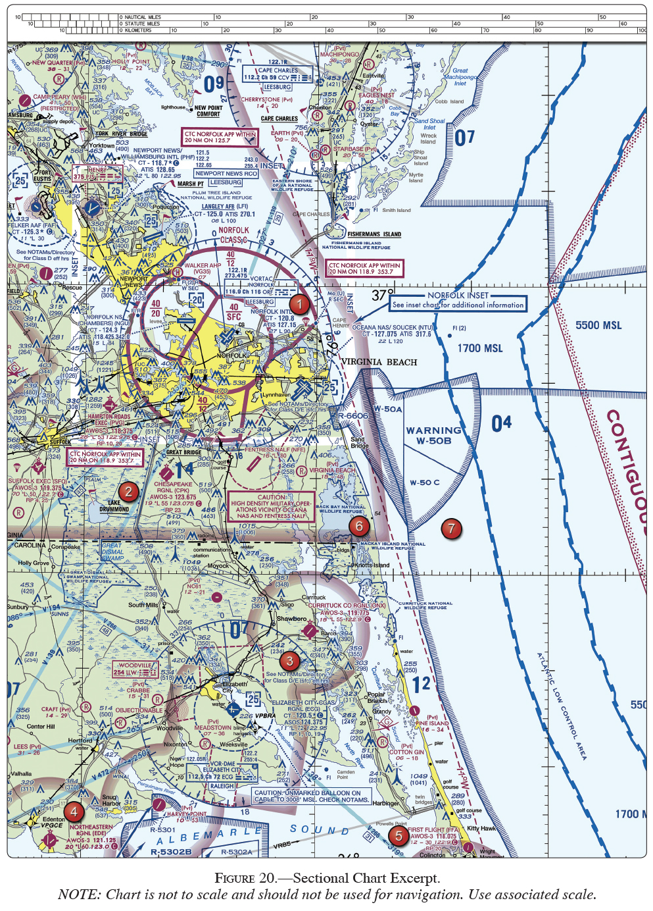
2. (Refer to Figure 20.) Determine the magnetic course from First Flight Airport (area 5) to Hampton Roads Airport (area 2).
Figure 20
3. (Refer to Figure 21.) What is the estimated time en route from Mercer County Regional Airport (area 3) to Minot International (area 1)? The wind is from 330 at 25 knots and the true airspeed is 100 knots. Add 3-1/2 minutes for departure and climb-out.
Figure 21 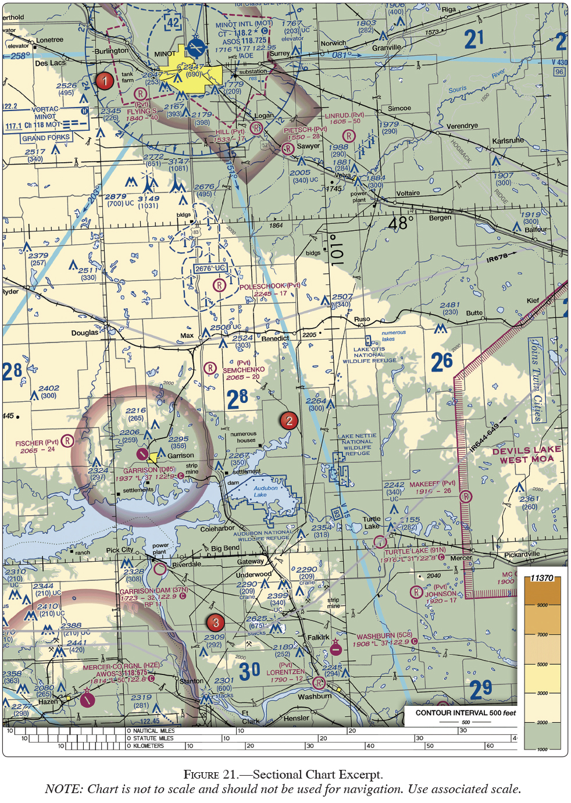
4. (Refer to Figure 21.) Determine the magnetic heading for a flight from Mercer County Regional Airport (area 3) to Minot International (area 1). The wind is from 330 at 25 knots, the true airspeed is 100 knots, and the magnetic variation is 10 east.
Figure 21
5. (Refer to Figure 22.) What is the estimated time en route from Sandpoint Airport (area 1) to St. Maries Airport (area 4)? The wind is from 215 at 25 knots, and the true airspeed is 125 knots.
Figure 22
6. (Refer to Figure 22.) Determine the estimated time en route for a flight from Priest River Airport (area 1) to Shoshone County Airport (area 3). The wind is from 030 at 12 knots and the true airspeed is 95 knots. Add 2 minutes for climb-out.
7. (Refer to Figure 22.) What is the estimated time en route for a flight from St. Maries Airport (area 4) to Priest River Airport (area 1)? The wind is from 300 at 14 knots and the true airspeed is 90 knots. Add 3 minutes for climb-out.
8. (Refer to Figure 22.) Determine the magnetic heading for a flight from Sandpoint Airport (area 1) to St. Maries Airport (area 4). The wind is from 215 at 25 knots and the true airspeed is 125 knots.
9. (Refer to Figure 22.) What is the magnetic heading for a flight from Priest River Airport (area 1) to Shoshone County Airport (area 3)? The wind is from 030 at 12 knots and the true airspeed is 95 knots.
10. (Refer to Figure 22.) Determine the magnetic heading for a flight from St. Maries Airport (area 4) to Priest River Airport (area 1). The wind is from 340 at 10 knots, and the true airspeed is 90 knots.
11. (Refer to Figure 23.) What is the estimated time en route for a flight from Allendale County Airport (area 1) to Claxton-Evans County Airport (area 2)? The wind is from 100 at 18 knots and the true airspeed is 115 knots. Add 2 minutes for climb-out.
Figure 23 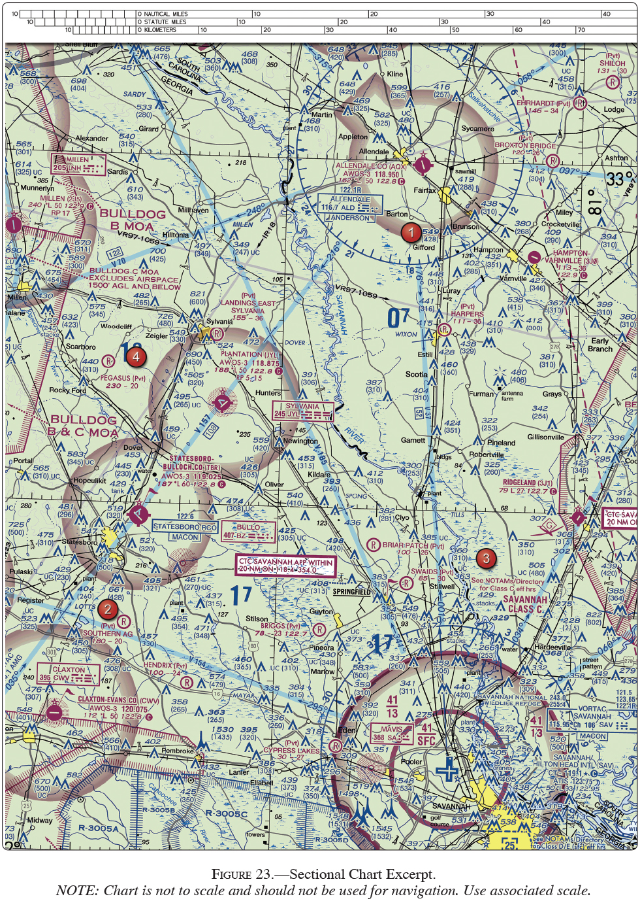
12. (Refer to Figure 23.) What is the estimated time en route for a flight from Claxton-Evans County Airport (area 2) to Hampton Varnville Airport (area 1)? The wind is from 290 at 18 knots and the true airspeed is 85 knots. Add 2 minutes for climb-out.
Figure 23
13. (Refer to Figure 23.) Determine the magnetic heading for a flight from Allendale County Airport (area 1) to Claxton-Evans County Airport (area 2). The wind is from 090 at 16 knots, and the true airspeed is 90 knots. Use 5 west variation.
14. (Refer to Figures 23 and 58.) Determine the compass heading for a flight from Claxton-Evans County Airport (area 2) to Hampton Varnville Airport (area 1). The wind is from 280 at 08 knots, and the true airspeed is 85 knots. Use 6 west variation.
Figure 58 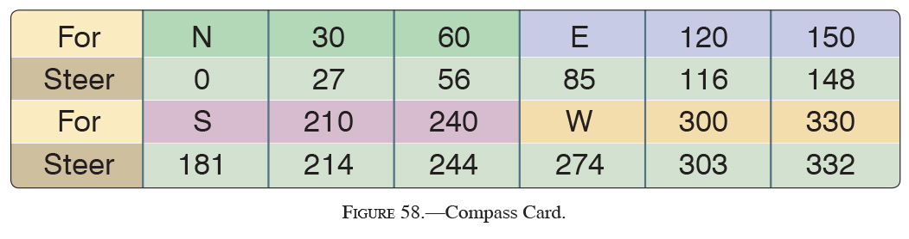
15. (Refer to Figure 23.) While en route on Victor 185, a flight crosses the 248 radial of Allendale VOR at 0953 and then crosses the 216 radial of Allendale VOR at 1000. What is the estimated time of arrival at Savannah VORTAC?
16. (Refer to Figure 24.) Determine the magnetic course from Airpark East Airport (area 1) to Winnsboro Airport (area 2). Magnetic variation is 630'E.
Figure 24 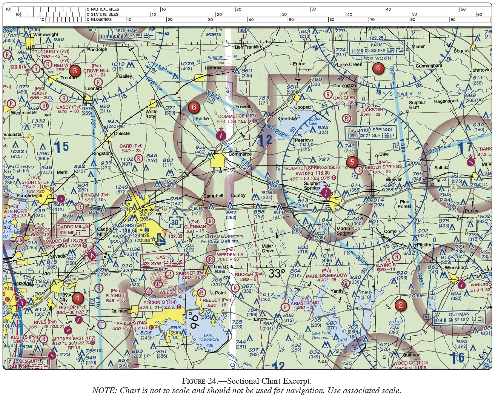
17. (Refer to Figure 25.) What is the estimated time en route for a flight from Denton Muni (area 1) to Addison (area 2)? The wind is from 200 at 20 knots, the true airspeed is 110 knots, and the magnetic variation is 7 east.
Figure 25
18. (Refer to Figure 25.) Estimate the time en route from Addison (area 2) to Dallas Executive (area 3). The wind is from 300 at 15 knots, the true airspeed is 120 knots, and the magnetic variation is 7 east.
19. (Refer to Figure 25.) Determine the magnetic heading for a flight from Fort Worth Meacham (area 4) to Denton Muni (area 1). The wind is from 330 at 25 knots, the true airspeed is 110 knots, and the magnetic variation is 7 east.
20. (Refer to Figure 26.) Determine the magnetic course from Cooperstown Airport (area 2) to Jamestown Airport (area 4).
Figure 26 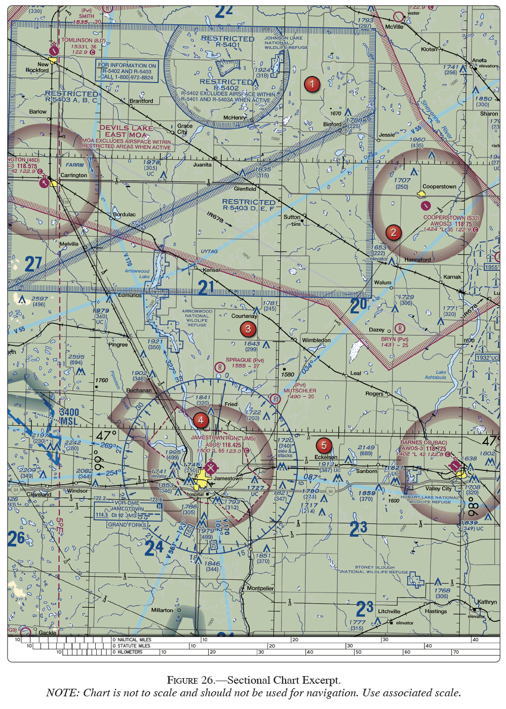
21. The angular difference between true north and magnetic north is
22. If a true heading of 135 results in a ground track of 130 and a true airspeed of 135 knots results in a groundspeed of 140 knots, the wind would be from
23. When converting from true course to magnetic heading, a pilot should
24. How far will an aircraft travel in 2-1/2 minutes with a groundspeed of 98 knots?
25. On a cross-country flight, point A is crossed at 1500 hours and the plan is to reach point B at 1530 hours. Use the following information to determine the indicated airspeed required to reach point B on schedule.Distance between A and B 70 NMForecast wind 310 at 15 ktsPressure altitude 8,000 ftAmbient temperature -10 CTrue course 270The required indicated airspeed would be approximately
26. What effect does high density altitude, as compared to low density altitude, have on propeller efficiency and why?
27. What is density altitude?
28. If the outside air temperature (OAT) at a given altitude is warmer than standard, the density altitude is
29. Which combination of atmospheric conditions will reduce aircraft takeoff and climb performance?
30. What effect does high density altitude have on aircraft performance?
31. (Refer to Figure 8.) What is the effect of a temperature increase from 25 to 50 F on the density altitude if the pressure altitude remains at 5,000 feet?
Figure 8 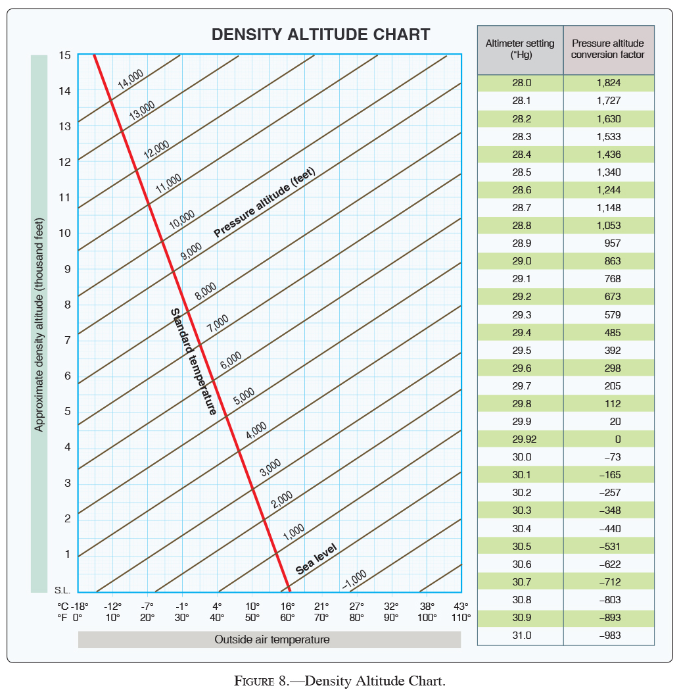
32. (Refer to Figure 8.) Determine the pressure altitude with an indicated altitude of 1,380 feet MSL with an altimeter setting of 28.22 at standard temperature.
Figure 8
33. (Refer to Figure 8.) Determine the density altitude for these conditions:Altimeter setting.....................29.25Runway temperature...................+81 FAirport elevation..............5,250 ft MSL
34. (Refer to Figure 8.) Determine the pressure altitude at an airport that is 3,563 feet MSL with an altimeter setting of 29.96.
35. (Refer to Figure 8.) What is the effect of a temperature increase from 35 to 50 F on the density altitude if the pressure altitude remains at 3,000 feet MSL?
36. (Refer to Figure 8.) Determine the pressure altitude at an airport that is 1,386 feet MSL with an altimeter setting of 29.97.
37. (Refer to Figure 8.) Determine the density altitude for these conditions:Altimeter setting.......................30.35Runway temperature.....................+25 FAirport elevation................3,894 ft MSL
38. (Refer to Figure 8.) What is the effect of a temperature decrease and a pressure altitude increase on the density altitude from 90 F and 1,250 feet pressure altitude to 55 F and 1,750 feet pressure altitude?
39. What effect, if any, does high humidity have on aircraft performance?
40. Under which condition will pressure altitude be equal to true altitude?
41. Under what condition is pressure altitude and density altitude the same value?
42. Which factor would tend to increase the density altitude at a given airport?
43. (Refer to Figure 35.) Approximately what true airspeed should a pilot expect with 65 percent maximum continuous power at 9,500 feet with a temperature of 36 F below standard?
Figure 35 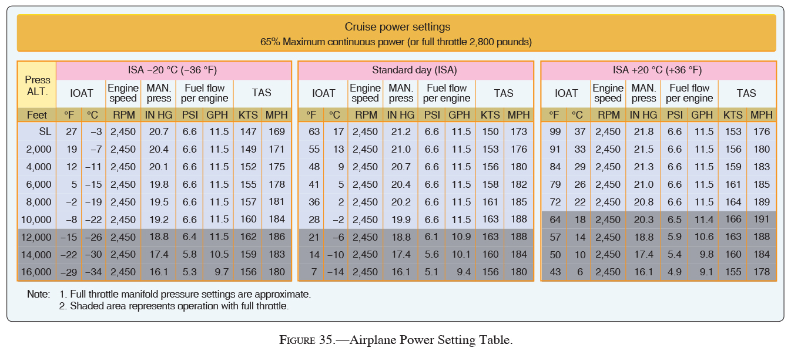
44. (Refer to Figure 35.) What is the expected fuel consumption for a 1,000-nautical mile flight under the following conditions?Pressure altitude.......................8,000 ftTemperature................................22 CManifold pressure.......................20.8" HgWind........................................Calm
Figure 35
45. (Refer to Figure 35.) What is the expected fuel consumption for a 500-nautical mile flight under the following conditions?Pressure altitude........................4,000 ftTemperature...............................+ 29 CManifold pressure........................21.3" HgWind.........................................Calm
46. (Refer to Figure 35.) What fuel flow should a pilot expect at 11,000 feet on a standard day with 65 percent maximum continuous power?
47. (Refer to Figure 35.) Determine the approximate manifold pressure setting with 2,450 RPM to achieve 65 percent maximum continuous power at 6,500 feet with a temperature of 36 F higher than standard.
48. (Refer to Figure 36.) What is the headwind component for a landing on Runway 18 if the tower reports the wind as 220 at 30 knots?
Figure 36 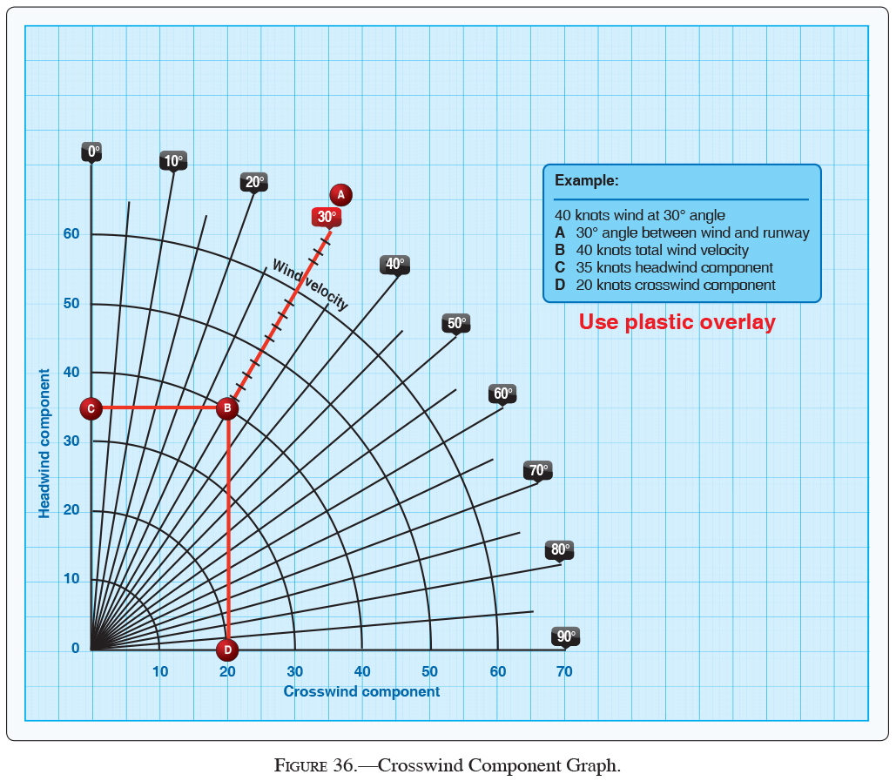
49. (Refer to Figure 36.) Determine the maximum wind velocity for a 45 crosswind if the maximum crosswind component for the airplane is 25 knots.
Figure 36
50. (Refer to Figure 36.) What is the maximum wind velocity for a 30 crosswind if the maximum crosswind component for the airplane is 12 knots?
51. (Refer to Figure 36.) With a reported wind of north at 20 knots, which runway (6, 29, or 32) is acceptable for use for an airplane with a 13-knot maximum crosswind component?
52. (Refer to Figure 36.) With a reported wind of south at 20 knots, which runway (10, 14, or 24) is appropriate for an airplane with a 13-knot maximum crosswind component?
53. (Refer to Figure 36.) What is the crosswind component for a landing on Runway 18 if the tower reports the wind as 220 at 30 knots?
54. (Refer to Figure 37.) Determine the total distance required to land.OAT.........................................32 FPressure altitude........................8,000 ftWeight...................................2,600 lbHeadwind component..........................20 ktsObstacle....................................50 ft
Figure 37 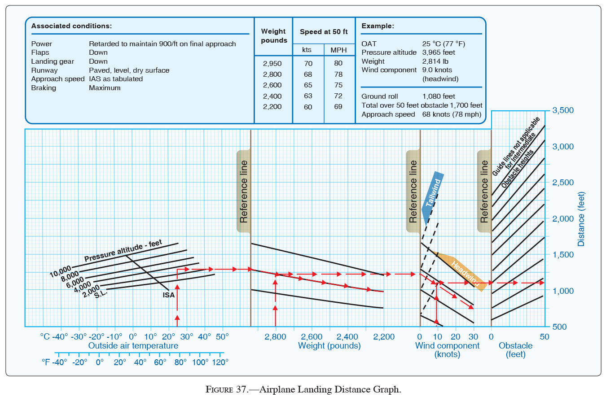
55. (Refer to Figure 37.) Determine the total distance required to land.OAT.........................................StdPressure altitude.....................10,000 ftWeight................................2,400 lbsWind component.............................CalmObstacle..................................50 ft
Figure 37
56. (Refer to Figure 37.) Determine the total distance required to land.OAT.........................................90 FPressure altitude........................3,000 ftWeight...................................2,900 lbsHeadwind component..........................10 ktsObstacle....................................50 ft
57. (Refer to Figure 37.) Determine the approximate total distance required to land over a 50-foot obstacle.OAT.........................................90 FPressure altitude........................4,000 ftWeight...................................2,800 lbsHeadwind component..........................10 kts
58. (Refer to Figure 38.) Determine the approximate landing ground roll distance.Pressure altitude.................Sea levelHeadwind..............................4 ktsTemperature.............................Std
Figure 38 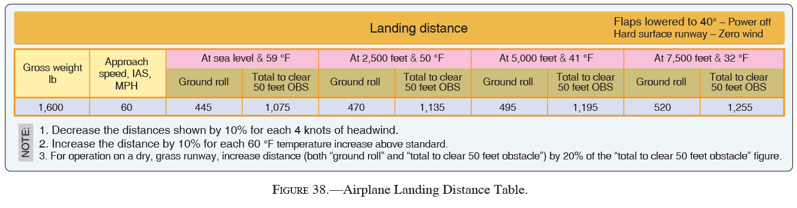
59. (Refer to Figure 38.) Determine the total distance required to land over a 50-foot obstacle.Pressure altitude..............7,500 ftHeadwind..........................8 ktsTemperature.......................32 FRunway.....................Hard surface
Figure 38
60. (Refer to Figure 38.) Determine the total distance required to land over a 50-foot obstacle.Pressure altitude..............5,000 ftHeadwind..........................8 ktsTemperature.......................41 FRunway.....................Hard surface
61. (Refer to Figure 38.) Determine the approximate landing ground roll distance.Pressure altitude......................5,000 ftHeadwind...................................CalmTemperature..............................101 F
62. (Refer to Figure 38.) Determine the total distance required to land over a 50-foot obstacle.Pressure altitude.........................3,750 ftHeadwind....................................12 ktsTemperature....................................Std
63. (Refer to Figure 38.) Determine the approximate landing ground roll distance.Pressure altitude.........................1,250 ftHeadwind.....................................8 ktsTemperature....................................Std
64. (Refer to Figure 40.) Determine the total distance required for takeoff to clear a 50-foot obstacle.OAT..........................................StdPressure altitude.......................4,000 ftTakeoff weight..........................2,800 lbHeadwind component..........................Calm
Figure 40 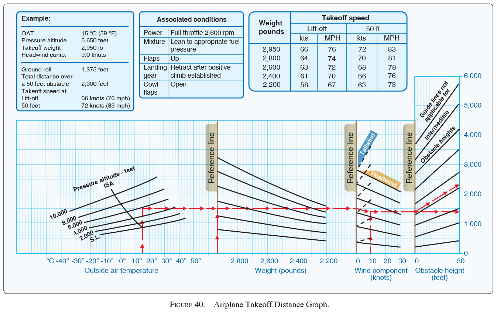
65. (Refer to Figure 40.) Determine the total distance required for takeoff to clear a 50-foot obstacle.OAT......................................StdPressure altitude..................Sea levelTakeoff weight......................2,700 lbHeadwind component......................Calm
Figure 40
66. (Refer to Figure 40.) Determine the approximate ground roll distance required for takeoff.OAT........................................38 CPressure altitude.......................2,000 ftTakeoff weight..........................2,750 lbHeadwind component..........................Calm
67. (Refer to Figure 40.) Determine the approximate ground roll distance required for takeoff.OAT.........................................32 CPressure altitude........................2,000 ftTakeoff weight...........................2,500 lbHeadwind component..........................20 kts
68. Which items are included in the empty weight of an aircraft?
69. An aircraft is loaded 110 pounds over maximum certificated gross weight. If fuel (gasoline) is drained to bring the aircraft weight within limits, how much fuel should be drained?
70. If an aircraft is loaded 90 pounds over maximum certificated gross weight and fuel (gasoline) is drained to bring the aircraft weight within limits, how much fuel should be drained?
71. GIVEN: WEIGHT ARM MOMENT (LB) (IN) (LB-IN)Empty weight 1,495.0 101.4 151,593.0Pilot and passengers 380.0 64.0 ----Fuel (30 galusable no reserve) ----- 96.0 ----The CG is located how far aft of datum?
72. (Refer to Figures 32 and 33.) Determine if the airplane weight and balance is within limits.Front seat occupants.......................340 lbRear seat occupants........................295 lbFuel (main wing tanks)......................44 galBaggage.....................................56 lb
Figure 32 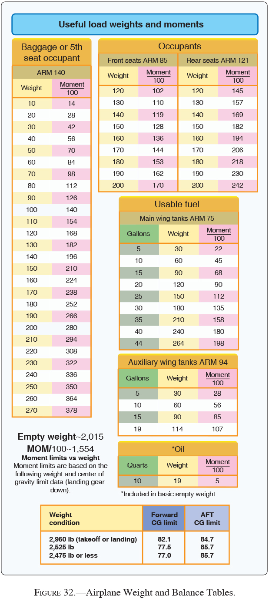
Figure 33 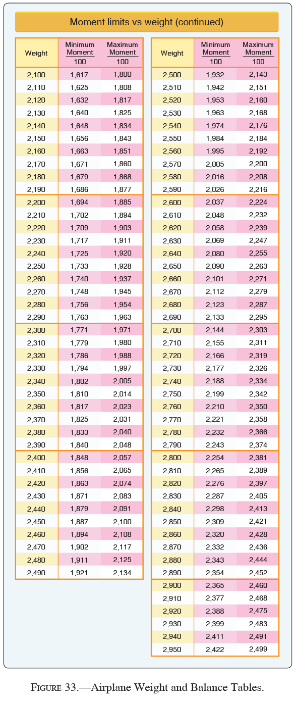
73. (Refer to Figures 32 and 33.) What is the maximum amount of baggage that can be carried when the airplane is loaded as follows?Front seat occupants.......................387 lbRear seat occupants........................293 lbFuel.......................................35 gal
Figure 32
Figure 33
74. (Refer to Figures 32 and 33.) Calculate the weight and balance and determine if the CG and the weight of the airplane are within limits.Front seat occupants.......................350 lbRear seat occupants........................325 lbBaggage.....................................27 lbFuel........................................35 gal
75. (Refer to Figures 32 and 33.) Determine if the airplane weight and balance is within limits.Front seat occupants.......................415 lbRear seat occupants........................110 lbFuel, main tanks............................44 galFuel, aux. tanks............................19 galBaggage.....................................32 lb
76. (Refer to Figure 34.) What is the maximum amount of baggage that may be loaded aboard the airplane for the CG to remain within the moment envelope? WEIGHT (LB) MOM/1000Empty weight 1,350 51.5Pilot and front passenger 250 ---Rear passengers 400 ---Baggage --- ---Fuel, 30 gal --- ---Oil, 8 qt --- 0.2
Figure 34 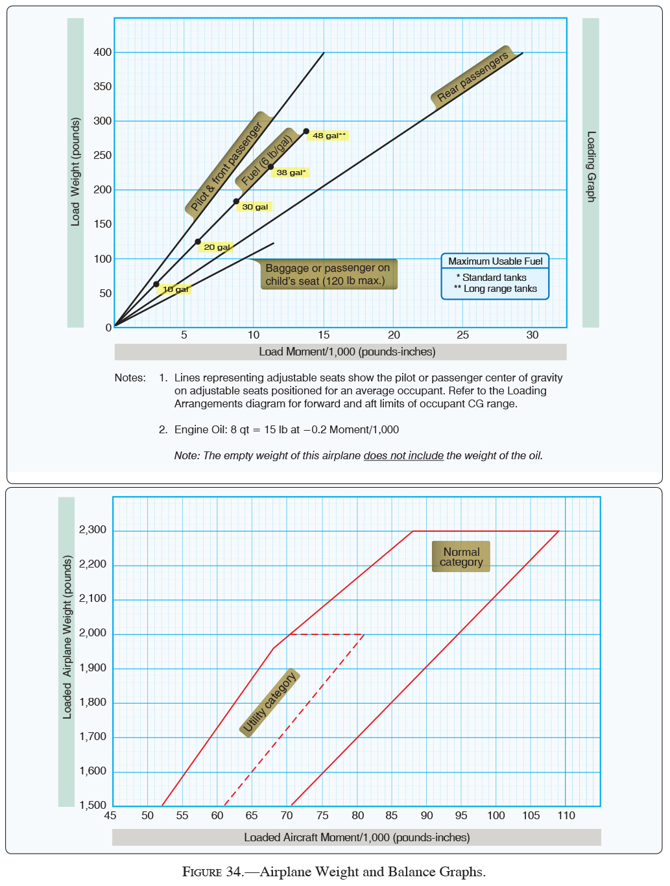
77. (Refer to Figure 34.) Calculate the moment of the airplane and determine which category is applicable. WEIGHT (LB) MOM/1000Empty weight 1,350 51.5Pilot and front passenger 310 ---Rear passengers 96 ---Fuel, 38 gal --- ---Oil, 8 qt --- 0.2
Figure 34
78. (Refer to Figure 34.) What is the maximum amount of fuel that may be aboard the airplane on takeoff if loaded as follows? WEIGHT (LB) MOM/1000Empty weight 1,350 51.5Pilot and front passenger 340 ---Rear passengers 310 ---Baggage 45 ---Oil, 8 qt --- ---
79. (Refer to Figure 34.) Determine the moment with the following data: WEIGHT (LB) MOM/1000Empty weight 1,350 51.5Pilot and front passenger 340 ---Fuel (std tanks) Capacity ---Oil, 8 qt --- ---
80. (Refer to Figure 34.) Determine the aircraft loaded moment and the aircraft category. WEIGHT (LB) MOM/1000Empty weight 1,350 51.5Pilot and front passenger 380 ---Fuel, 48 gal 288 ---Oil, 8 qt --- ---
81. (Refer to Figures 32 and 33.) Upon landing, the front passenger (180 pounds) departs the airplane. A rear passenger (204 pounds) moves to the front passenger position. What effect does this have on the CG if the airplane weighed 2,690 pounds and the MOM/100 was 2,260 just prior to the passenger transfer?
82. (Refer to Figures 32 and 33.) Which action can adjust the airplane's weight to maximum gross weight and the CG within limits for takeoff?Front seat occupants.......................425 lbRear seat occupants........................300 lbFuel, main tanks............................44 gal
83. (Refer to Figures 32 and 33.) What effect does a 35-gallon fuel burn (main tanks) have on the weight and balance if the airplane weighed 2,890 pounds and the MOM/100 was 2,452 at takeoff?
84. (Refer to Figures 32 and 33.) With the airplane loaded as follows, what action can be taken to balance the airplane?Front seat occupants.......................411 lbRear seat occupants........................100 lbMain wing tanks.............................44 gal
85. (Refer to Figure 61.) If 50 pounds of weight is located at point X and 100 pounds at point Z, how much weight must be located at point Y to balance the plank?
Figure 61 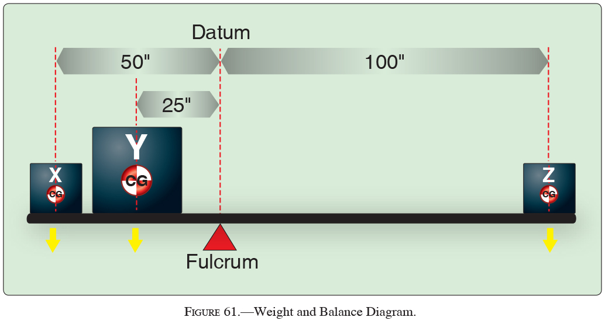
86. (Refer to Figure 60.) How should the 500-pound weight be shifted to balance the plank on the fulcrum?
Figure 60 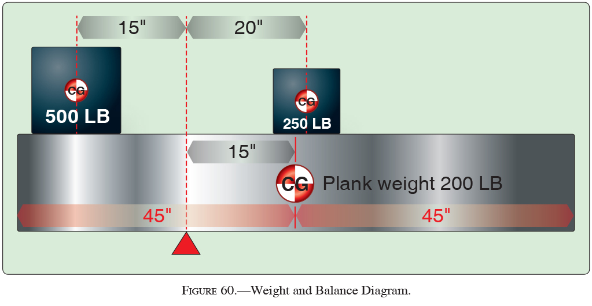
87. Which V-speed represents maneuvering speed?
88. Which V-speed represents maximum flap extended speed?
89. Which V-speed represents maximum landing gear extended speed?
90. VNO is defined as the
91. VSO is defined as the
92. Which would provide the greatest gain in altitude in the shortest distance during climb after takeoff?
93. After takeoff, which airspeed would the pilot use to gain the most altitude in a given period of time?
94. The four forces acting on an airplane in flight are
95. When are the four forces that act on an airplane in equilibrium?
96. (Refer to Figure 1.) The acute angle A is the angle of
Figure 1 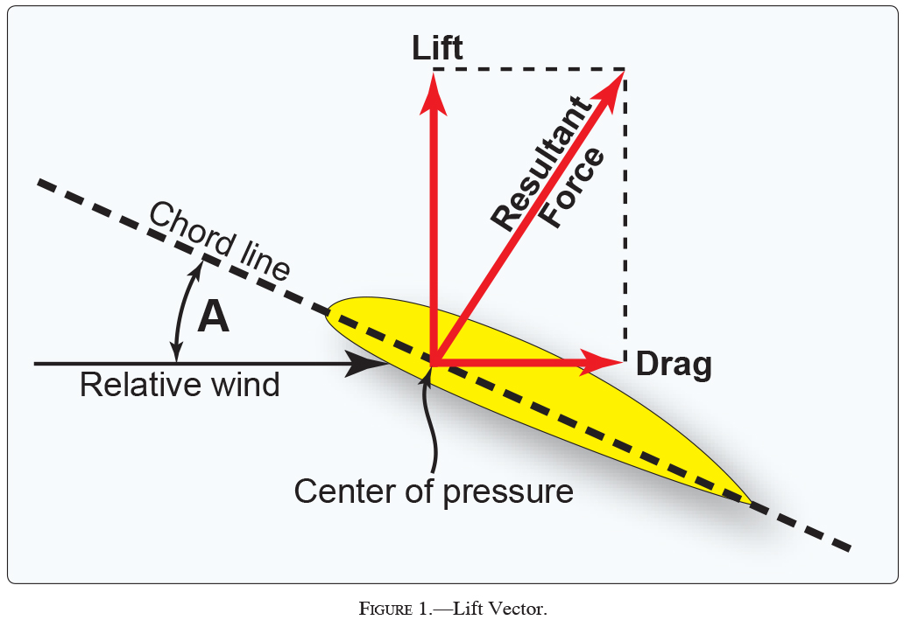
97. The term "angle of attack" is defined as the angle between the
98. What is the relationship of lift, drag, thrust, and weight when the airplane is in straight-and-level flight?
99. How will frost on the wings of an airplane affect takeoff performance?
100. In what flight condition is torque effect the greatest in a single-engine airplane?
101. The left turning tendency of an airplane caused by P-factor is the result of the
102. When does P-factor cause the airplane to yaw to the left?
103. An airplane said to be inherently stable will
104. What determines the longitudinal stability of an airplane?
105. What causes an airplane (except a T-tail) to pitch nosedown when power is reduced and controls are not adjusted?
106. What is the purpose of the rudder on an airplane?
107. (Refer to Figure 2.) If an airplane weighs 2,300 pounds, what approximate weight would the airplane structure be required to support during a 60 banked turn while maintaining altitude?
Figure 2 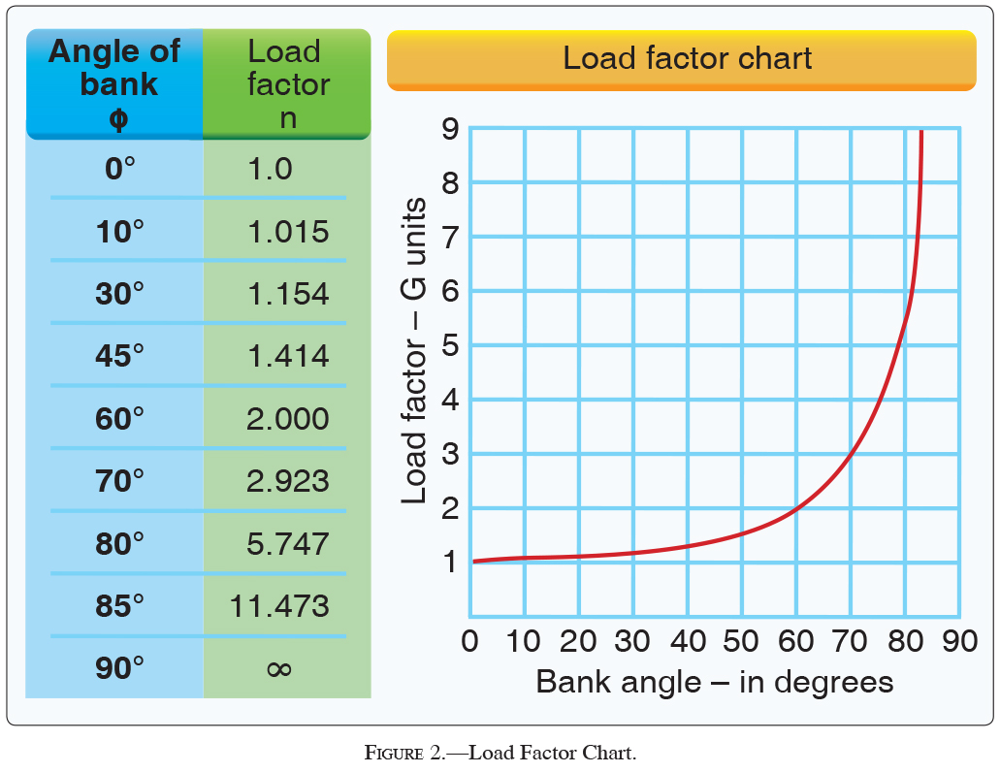
108. (Refer to Figure 2.) If an airplane weighs 3,300 pounds, what approximate weight would the airplane structure be required to support during a 30 banked turn while maintaining altitude?
Figure 2
109. (Refer to Figure 2.) If an airplane weighs 4,500 pounds, what approximate weight would the airplane structure be required to support during a 45 banked turn while maintaining altitude?
110. The amount of excess load that can be imposed on the wing of an airplane depends upon the
111. Which basic flight maneuver increases the load factor on an airplane as compared to straight-and-level flight?
112. One of the main functions of flaps during approach and landing is to
113. What is one purpose of wing flaps?
114. As altitude increases, the indicated airspeed at which a given airplane stalls in a particular configuration will
115. What does the red line on an airspeed indicator represent?
116. (Refer to Figure 4.) What is the full flap operating range for the airplane?
Figure 4 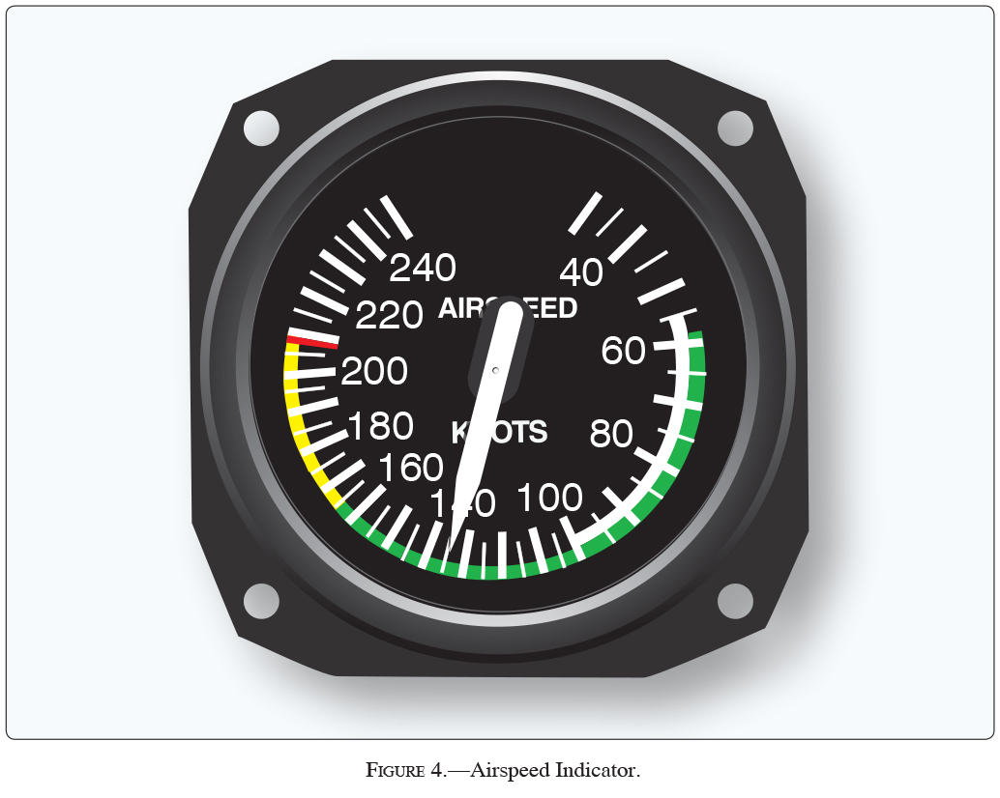
117. (Refer to Figure 4.) What is the caution range of the airplane?
Figure 4
118. (Refer to Figure 4.) The maximum speed at which the airplane can be operated in smooth air is
119. (Refer to Figure 4.) Which marking identifies the never-exceed speed?
120. (Refer to Figure 4.) Which color identifies the power-off stalling speed in a specified configuration?
121. (Refer to Figure 4.) What is the maximum flaps-extended speed?
122. (Refer to Figure 4.) Which color identifies the normal flap operating range?
123. (Refer to Figure 4.) Which color identifies the power-off stalling speed with wing flaps and landing gear in the landing configuration?
124. (Refer to Figure 4.) What is the maximum structural cruising speed?
125. What is an important airspeed limitation that is not color coded on airspeed indicators?
126. An airplane has been loaded in such a manner that the CG is located aft of the aft CG limit. One undesirable flight characteristic a pilot might experience with this airplane would be
127. Loading an airplane to the most aft CG will cause the airplane to be
128. What force makes an airplane turn?
129. In what flight condition must an aircraft be placed in order to spin?
130. During a spin to the left, which wing(s) is/are stalled?
131. The angle of attack at which an airplane wing stalls will
132. What is ground effect?
133. Floating caused by the phenomenon of ground effect will be most realized during an approach to land when at
134. What must a pilot be aware of as a result of ground effect?
135. Ground effect is most likely to result in which problem?
136. During an approach to a stall, an increased load factor will cause the airplane to
137. Why is frost considered hazardous to flight?
138. How does frost affect the lifting surfaces of an airplane on takeoff?
139. Upon encountering severe turbulence, which flight condition should the pilot attempt to maintain?
140. Wingtip vortices are created only when an aircraft is
141. The greatest vortex strength occurs when the generating aircraft is
142. Wingtip vortices created by large aircraft tend to
143. When taking off or landing at an airport where heavy aircraft are operating, one should be particularly alert to the hazards of wingtip vortices because this turbulence tends to
144. The condition that requires maximum caution when avoiding wake turbulence on landing is a
145. When landing behind a large aircraft, the pilot should avoid wake turbulence by staying
146. When departing behind a heavy aircraft, the pilot should avoid wake turbulence by maneuvering the aircraft
147. When landing behind a large aircraft, which procedure should be followed for vortex avoidance?
148. Which statement relates to Bernoulli's principle?
149. How does the wake turbulence vortex circulate around each wingtip?
150. The angle between the chord line of an airfoil and the relative wind is known as the angle of
151. Changes in the center of pressure of a wing affect the aircraft's
152. If the pitot tube and outside static vents become clogged, which instruments would be affected?
153. Which instrument will become inoperative if the pitot tube becomes clogged?
154. Which instrument(s) will become inoperative if the static vents become clogged?
155. (Refer to Figure 3.) Altimeter 1 indicates
Figure 3 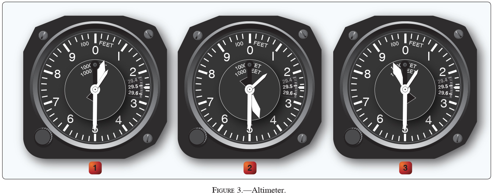
156. (Refer to Figure 3.) Altimeter 2 indicates
Figure 3
157. (Refer to Figure 3.) Altimeter 3 indicates
158. (Refer to Figure 3.) Which altimeter(s) indicate(s) more than 10,000 feet?
159. Altimeter setting is the value to which the barometric pressure scale of the altimeter is set so the altimeter indicates
160. How do variations in temperature affect the altimeter?
161. What is true altitude?
162. What is absolute altitude?
163. What is pressure altitude?
164. Under what condition is indicated altitude the same as true altitude?
165. If it is necessary to set the altimeter from 29.15 to 29.85, what change occurs?
166. The pitot system provides impact pressure for which instrument?
167. (Refer to Figure 5.) A turn coordinator provides an indication of the
Figure 5 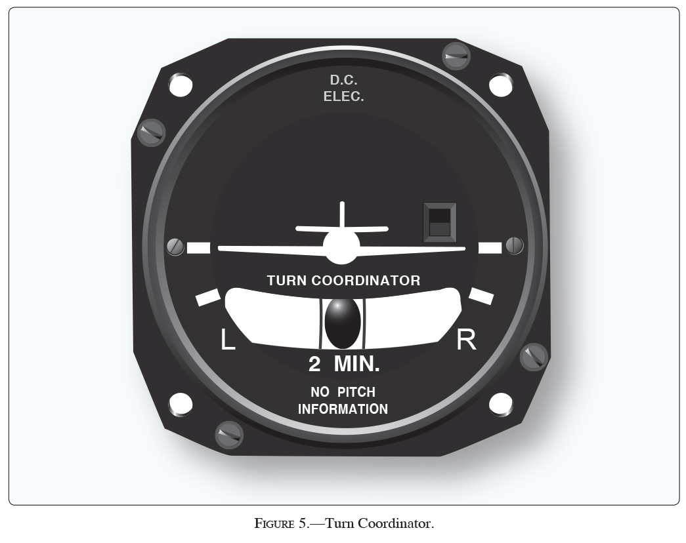
168. (Refer to Figure 6.) To receive accurate indications during flight from a heading indicator, the instrument must be
Figure 6 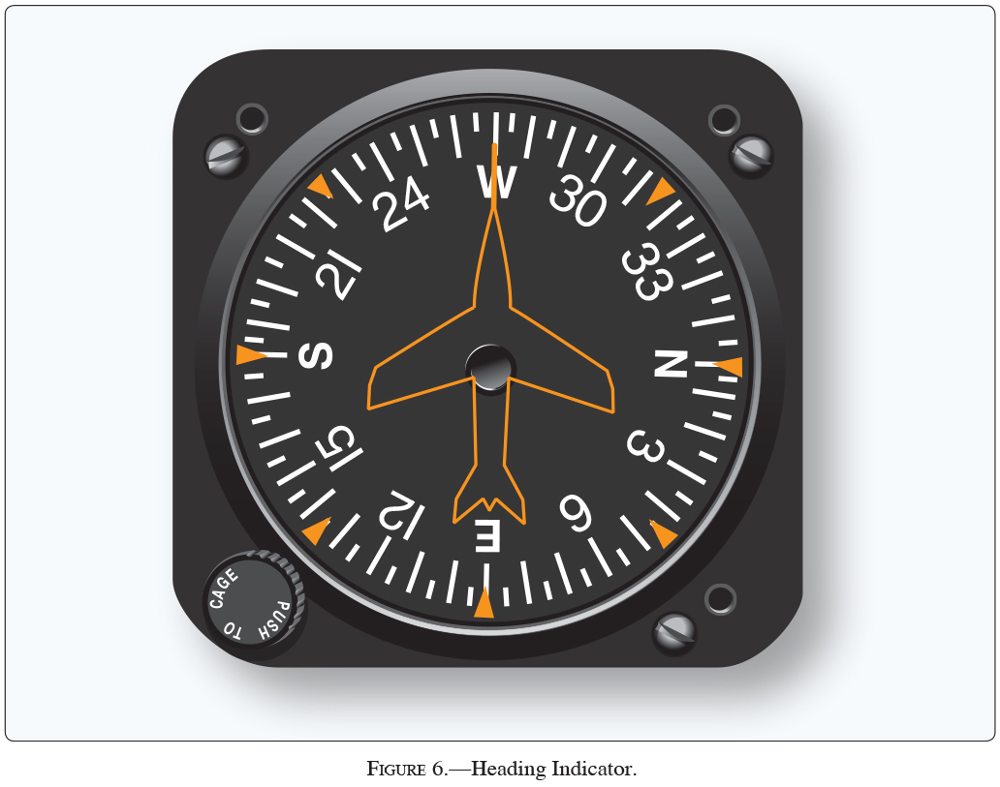
169. (Refer to Figure 7.) How should a pilot determine the direction of bank from an attitude indicator such as the one illustrated?
Figure 7 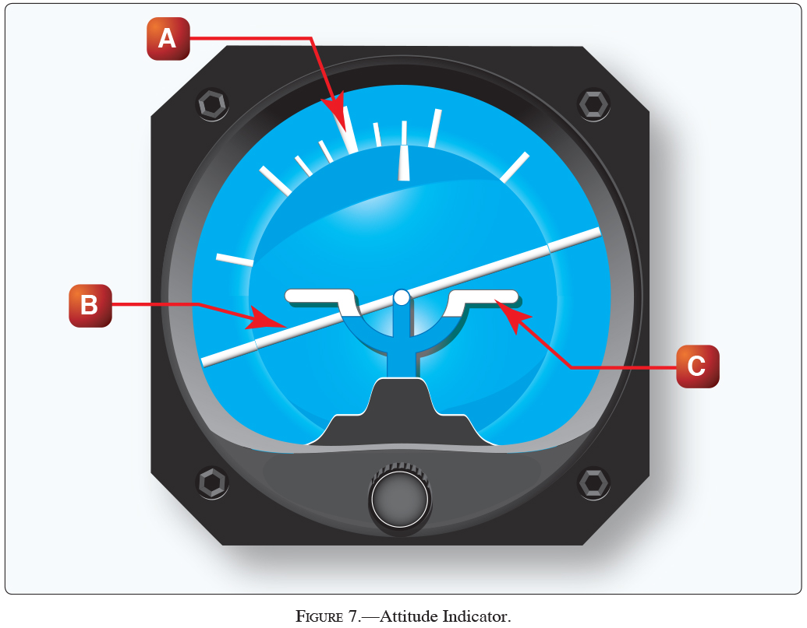
170. Deviation in a magnetic compass is caused by the
171. In the Northern Hemisphere, a magnetic compass will normally indicate initially a turn toward the west if
172. In the Northern Hemisphere, a magnetic compass will normally indicate initially a turn toward the east if
173. In the Northern Hemisphere, a magnetic compass will normally indicate a turn toward the north if
174. In the Northern Hemisphere, the magnetic compass will normally indicate a turn toward the south when
175. In the Northern Hemisphere, if an aircraft is accelerated or decelerated, the magnetic compass will normally indicate
176. During flight, when are the indications of a magnetic compass accurate?
177. If a pilot changes the altimeter setting from 30.11 to 29.96, what is the approximate change in indication?
178. If a flight is made from an area of low pressure into an area of high pressure without the altimeter setting being adjusted, the altimeter will indicate
179. If a flight is made from an area of high pressure into an area of lower pressure without the altimeter setting being adjusted, the altimeter will indicate
180. Under what condition will true altitude be lower than indicated altitude?
181. Which condition would cause the altimeter to indicate a lower altitude than true altitude?
182. What should be the indication on the magnetic compass as you roll into a standard rate turn to the right from a south heading in the Northern Hemisphere?
183. (Refer to Figure 20, area 3.) Determine the approximate latitude and longitude of Currituck County Airport.
184. (Refer to Figure 21, area 2.) Which airport is located at approximately 4734'30"N latitude and 10044'00"W longitude?
185. (Refer to Figure 21, area 3.) Which airport is located at approximately 4721'N latitude and 10101'W longitude?
186. (Refer to Figure 22, area 3.) Determine the approximate latitude and longitude of Shoshone County Airport.
187. (Refer to Figure 26, area 2.) What is the approximate latitude and longitude of Cooperstown Airport?
Figure 26
188. (Refer to Figure 27.) An aircraft departs an airport in the eastern daylight time zone at 0945 EDT for a 2-hour flight to an airport located in the central daylight time zone. The landing should be at what coordinated universal time?
Figure 27 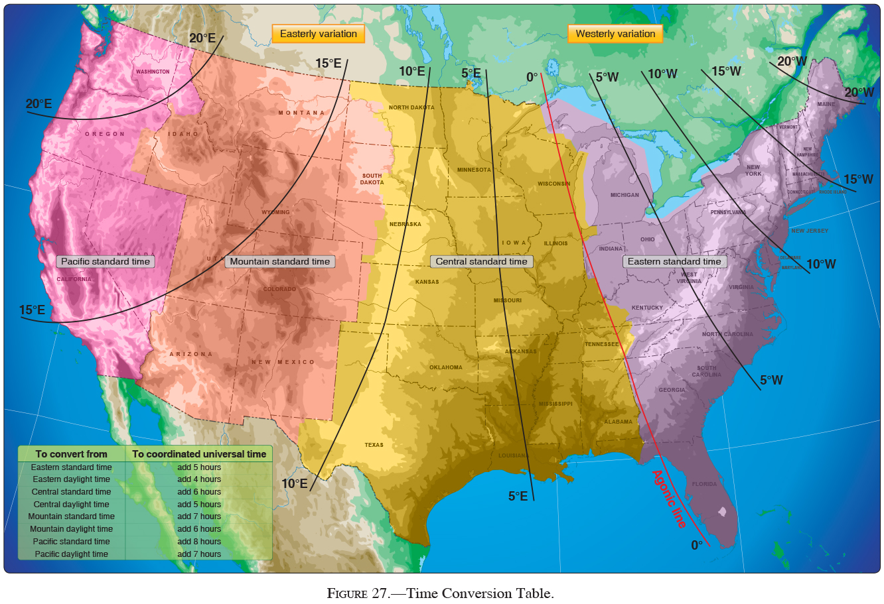
189. (Refer to Figure 27.) An aircraft departs an airport in the central standard time zone at 0930 CST for a 2-hour flight to an airport located in the mountain standard time zone. The landing should be at what time?
Figure 27
190. (Refer to Figure 27.) An aircraft departs an airport in the central standard time zone at 0845 CST for a 2-hour flight to an airport located in the mountain standard time zone. The landing should be at what coordinated universal time?
191. (Refer to Figure 27.) An aircraft departs an airport in the mountain standard time zone at 1615 MST for a 2-hour 15-minute flight to an airport located in the Pacific standard time zone. The estimated time of arrival at the destination airport should be
192. (Refer to Figure 27.) An aircraft departs an airport in the Pacific standard time zone at 1030 PST for a 4-hour flight to an airport located in the central standard time zone. The landing should be at what coordinated universal time?
193. (Refer to Figure 27.) An aircraft departs an airport in the mountain standard time zone at 1515 MST for a 2-hour 30-minute flight to an airport located in the Pacific standard time zone. What is the estimated time of arrival at the destination airport?
194. (Refer to Figure 20, area 5.) The CAUTION box denotes what hazard to aircraft?
195. (Refer to Figure 20, area 2.) The flag symbol at Lake Drummond represents a
196. (Refer to Figure 20, area 2.) The elevation of the Chesapeake Regional Airport is
197. (Refer to Figure 21.) The terrain elevation of the light tan area between Minot (area 1) and Audubon Lake (area 2) varies from
198. (Refer to Figure 21.) Which public use airport(s) depicted are indicated as having fuel?
199. (Refer to Figure 23.) The flag symbols at Statesboro Bulloch County Airport, Claxton-Evans County Airport, and Ridgeland Airport are
200. (Refer to Figure 23, area 3.) What is the height of the lighted obstacle approximately 6 nautical miles southwest of Savannah International?
201. (Refer to Figure 23, area 3.) The top of the group obstruction approximately 11 nautical miles from the Savannah VORTAC on the 007 radial is
202. (Refer to Figure 24, area 1.) What minimum altitude is necessary to vertically clear the obstacle on the northeast side of Airpark East Airport by 500 feet?
Figure 24
203. (Refer to Figure 24, area 2.) What minimum altitude is necessary to vertically clear the obstacle on the southeast side of Winnsboro Airport by 500 feet?
204. (Refer to Figure 25, area 2.) The control tower frequency for Addison Airport is
205. (Refer to Figure 25, area 8.) What minimum altitude is required to fly over the Cedar Hill TV towers in the congested area south of NAS Dallas?
206. A military air station can be identified by a rotating beacon that emits
207. Which is true concerning the blue and magenta colors used to depict airports on Sectional Aeronautical Charts?
208. Which statement about longitude and latitude is true?
209. The width of a Federal Airway from either side of the centerline is
210. Unless otherwise specified, Federal Airways include that Class E airspace extending upward from
211. Normal VFR operations in Class D airspace with an operating control tower require the ceiling and visibility to be at least
212. A blue segmented circle on a Sectional Chart depicts which class airspace?
213. Airspace at an airport with a part-time control tower is classified as Class D airspace only
214. Unless otherwise authorized, two-way radio communications with Air Traffic Control are required for landings or takeoffs at all towered airports
215. Two-way radio communication must be established with the Air Traffic Control facility having jurisdiction over the area prior to entering which class airspace?
216. What minimum radio equipment is required for operation within Class C airspace?
217. What minimum pilot certification is required for operation within Class B airspace?
218. What minimum pilot certification is required for operation within Class B airspace?
219. What minimum radio equipment is required for VFR operation within Class B airspace?
220. An operable 4096-code transponder and Mode C encoding altimeter are required in
221. In which type of airspace are VFR flights prohibited?
222. During operations within controlled airspace at altitudes of less than 1,200 feet AGL, the minimum horizontal distance from clouds requirement for VFR flight is
223. What minimum visibility and clearance from clouds are required for VFR operations in Class G airspace at 700 feet AGL or below during daylight hours?
224. What minimum flight visibility is required for VFR flight operations on an airway below 10,000 feet MSL?
225. The minimum distance from clouds required for VFR operations on an airway below 10,000 feet MSL is
226. During operations within controlled airspace at altitudes of more than 1,200 feet AGL, but less than 10,000 feet MSL, the minimum distance above clouds requirement for VFR flight is
227. VFR flight in controlled airspace above 1,200 feet AGL and below 10,000 feet MSL requires a minimum visibility and vertical cloud clearance of
228. During operations outside controlled airspace at altitudes of more than 1,200 feet AGL, but less than 10,000 feet MSL, the minimum flight visibility for VFR flight at night is
229. Outside controlled airspace, the minimum flight visibility requirement for VFR flight above 1,200 feet AGL and below 10,000 feet MSL during daylight hours is
230. During operations outside controlled airspace at altitudes of more than 1,200 feet AGL, but less than 10,000 feet MSL, the minimum distance below clouds requirement for VFR flight at night is
231. The minimum flight visibility required for VFR flights above 10,000 feet MSL and more than 1,200 feet AGL in controlled airspace is
232. For VFR flight operations above 10,000 feet MSL and more than 1,200 feet AGL, the minimum horizontal distance from clouds required is
233. During operations at altitudes of more than 1,200 feet AGL and at or above 10,000 feet MSL, the minimum distance above clouds requirement for VFR flight is
234. No person may take off or land an aircraft under basic VFR at an airport that lies within Class D airspace unless the
235. The basic VFR weather minimums for operating an aircraft within Class D airspace are
236. A special VFR clearance authorizes the pilot of an aircraft to operate VFR while within Class D airspace when the visibility is
237. What is the minimum weather condition required for airplanes operating under special VFR in Class D airspace?
238. What are the minimum requirements for airplane operations under special VFR in Class D airspace at night?
239. No person may operate an airplane within Class D airspace at night under special VFR unless the
240. With certain exceptions, all aircraft within 30 miles of a Class B primary airport from the surface upward to 10,000 feet MSL must be equipped with
241. (Refer to Figure 25, area 4.) The floor of Class B airspace overlying Hicks Airport (T67) north-northwest of Fort Worth Meacham Field is
242. (Refer to Figure 25, area 2.) The floor of Class B airspace at Air Park-Dallas Airport is
243. (Refer to Figure 20 area 4.) What hazards to aircraft may exist in restricted areas such as R-5302B?
244. (Refer to Figure 26, area 2.) What hazards to aircraft may exist in areas such as Devils Lake East MOA?
245. (Refer to Figure 21, area 3.) What type military flight operations should a pilot expect along IR 644?
246. (Refer to Figure 26, area 3.) When flying over Arrowwood National Wildlife Refuge, a pilot should fly no lower than
247. (Refer to Figure 22, area 1.) The visibility and cloud clearance requirements to operate VFR during daylight hours over Sandpoint Airport at 1,200 feet AGL are
248. (Refer to Figure 26, area 2.) The visibility and cloud clearance requirements to operate VFR during daylight hours over the town of Cooperstown between 1,200 feet AGL and 10,000 feet MSL are
249. (Refer to Figure 26, area 1.) Identify the airspace over Tomlinson Airport (8J7).
250. (Refer to Figure 26, area 5.) The airspace overlying and within 5 miles of Barnes County Airport is
251. (Refer to Figure 25, area 7.) The airspace overlying McKinney (TKI) is controlled from the surface to
252. (Refer to Figure 25, area 4.) The airspace directly overlying Fort Worth Meacham is
253. (Refer to Figure 23, area 3.) What is the floor of the Savannah Class C airspace at the shelf area (outer circle)?
254. (Refer to Figure 20, area 1.) What minimum radio equipment is required to land and take off at Norfolk International?
255. (Refer to Figure 25.) At which airports is fixed-wing Special VFR not authorized?
256. (Refer to Figure 22, area 3.) The vertical limits of that portion of Class E airspace designated as a Federal Airway over Magee Airport are
257. An airport's rotating beacon operated during daylight hours indicates
258. The vertical limit of Class C airspace above the primary airport is normally
259. The normal radius of the procedural Outer Area of Class C airspace is normally
260. All operations within Class C airspace must be in
261. Under what condition may an aircraft operate from a satellite airport within Class C airspace?
262. Under what condition, if any, may pilots fly through a restricted area?
263. What action should a pilot take when operating under VFR in a Military Operations Area (MOA)?
264. Responsibility for collision avoidance in an alert area rests with
265. The lateral dimensions of Class D airspace are based on
266. A non-tower satellite airport, within the same Class D airspace as that designated for the primary airport, requires radio communications be established and maintained with the
267. Which initial action should a pilot take prior to entering Class C airspace?
268. What ATC facility should the pilot contact to receive a special VFR departure clearance in Class D airspace?
269. Pilots flying over a national wildlife refuge are requested to fly no lower than
270. (Refer to Figure 22, area 1.) The visibility and cloud clearance requirements to operate over Sandpoint Airport at night at less than 700 feet AGL are
271. (Refer to Figure 26, area 2.) The day VFR visibility and cloud clearance requirements to operate over the town of Cooperstown, after departing and climbing out of the Cooperstown Airport at or below 700 feet AGL are
272. One of the purposes for issuing a Temporary Flight restriction (TFR) is to
273. Flight through a restricted area should not be accomplished unless the pilot has
274. When a control tower, located on an airport within Class D airspace, ceases operation for the day, what happens to the airspace designation?
275. With certain exceptions, Class E airspace extends upward from either 700 feet or 1,200 feet AGL to, but does not include,
276. (Refer to Figure 20, area 3.) What is the recommended communications procedure for a landing at Currituck County Airport?
277. (Refer to Figure 21, area 2.) The CTAF/MULTICOM frequency for Garrison Airport is
278. (Refer to Figure 22, area 2; and Figure 31.) At Coeur d'Alene, which frequency should be used as a Common Traffic Advisory Frequency (CTAF) to self-announce position and intentions?
Figure 31 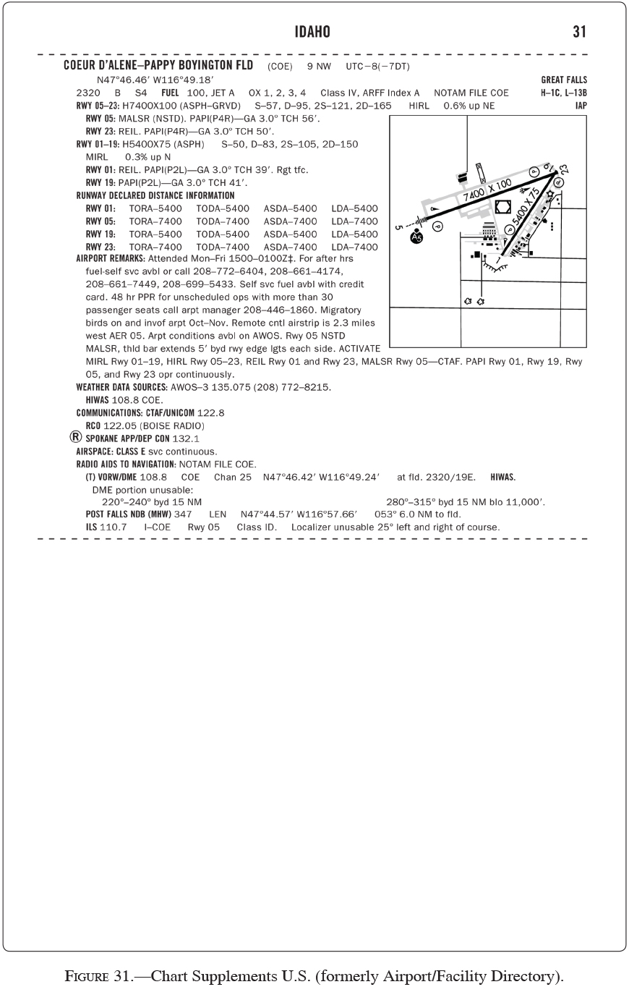
279. (Refer to Figure 22, area 2; and Figure 31.) At Coeur d'Alene, which frequency should be used as a Common Traffic Advisory Frequency (CTAF) to monitor airport traffic?
Figure 31
280. (Refer to Figure 22, area 2; and Figure 31.) What is the correct UNICOM frequency to be used at Coeur d'Alene to request fuel?
281. (Refer to Figure 25, area 3.) If Dallas Executive (RBD) Tower is not in operation, which frequency should be used as a Common Traffic Advisory Frequency (CTAF) to monitor airport traffic?
282. (Refer to Figure 26, area 2.) What is the recommended communication procedure when inbound to land at Cooperstown Airport?
283. (Refer to Figure 26, area 4.) The CTAF/UNICOM frequency at Jamestown Airport is
284. (Refer to Figure 26, area 5.) What is the CTAF/UNICOM frequency at Barnes County Airport?
285. When flying HAWK N666CB, the proper phraseology for initial contact with McAlester AFSS is
286. The correct method of stating 4,500 feet MSL to ATC is
287. The correct method of stating 10,500 feet MSL to ATC is
288. Prior to entering an Airport Advisory Area, a pilot should
289. Automatic Terminal Information Service (ATIS) is the continuous broadcast of recorded information concerning
290. An ATC radar facility issues the following advisory to a pilot flying on a heading of 090: "TRAFFIC 3 O'CLOCK, 2 MILES, WESTBOUND..." Where should the pilot look for this traffic?
291. An ATC radar facility issues the following advisory to a pilot flying on a heading of 360: "TRAFFIC 10 O'CLOCK, 2 MILES, SOUTHBOUND..." Where should the pilot look for this traffic?
292. An ATC radar facility issues the following advisory to a pilot during a local flight: "TRAFFIC 2 O'CLOCK, 5 MILES, NORTHBOUND..." Where should the pilot look for this traffic?
293. An ATC radar facility issues the following advisory to a pilot flying north in a calm wind: "TRAFFIC 9 O'CLOCK, 2 MILES, SOUTHBOUND..." Where should the pilot look for this traffic?
294. Basic radar service in the terminal radar program is best described as
295. From whom should a departing VFR aircraft request radar traffic information during ground operations?
296. TRSA Service in the terminal radar program provides
297. When making routine transponder code changes, pilots should avoid inadvertent selection of which code?
298. When operating under VFR below 18,000 feet MSL, unless otherwise authorized, what transponder code should be selected?
299. If Air Traffic Control advises that radar service is terminated when the pilot is departing Class C airspace, the transponder should be set to code
300. As standard operating practice, all inbound traffic to an airport without a control tower should continuously monitor the appropriate facility from a distance of
301. When an air traffic controller issues radar traffic information in relation to the 12-hour clock, the reference the controller uses is the aircraft's
302. Absence of the sky condition and visibility on an ATIS broadcast indicates that
303. (Refer to Figure 20.) What is your approximate position on low altitude airway Victor 1, southwest of Norfolk (area 1), if the VOR receiver indicates you are on the 340 radial of Elizabeth City VOR (area 3)?
304. (Refer to Figure 20, area 3; and Figure 28.) The VOR is tuned to Elizabeth City VOR, and the aircraft is positioned over Shawboro. Which VOR indication is correct?
Figure 28 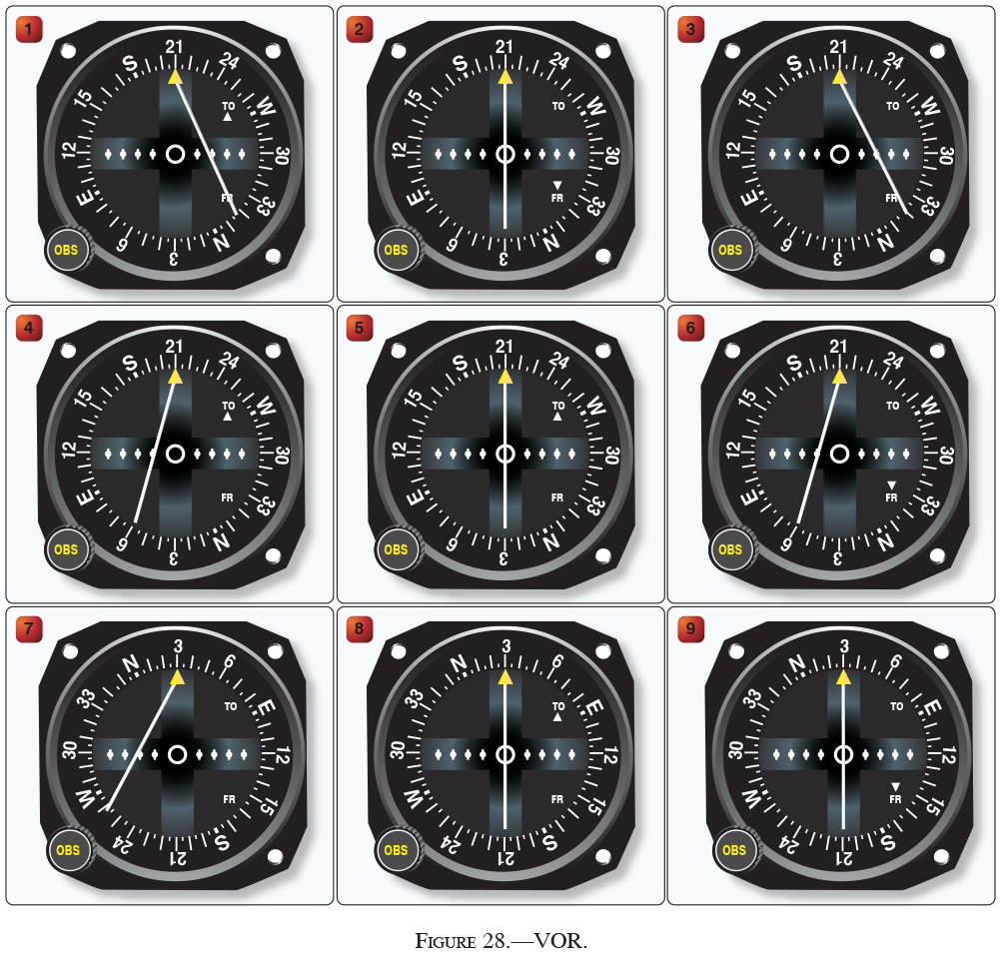
305. (Refer to Figure 21.) What course should be selected on the omnibearing selector (OBS) to make a direct flight from Mercer County Regional Airport (area 3) to the Minot VORTAC (area 1) with a TO indication?
306. (Refer to Figure 23.) What is the approximate position of the aircraft if the VOR receivers indicate the 320 radial of Savannah VORTAC (area 3) and the 191 radial of Allendale VOR (area 1)?
307. (Refer to Figure 23.) On what course should the VOR receiver (OBS) be set to navigate direct from Hampton Varnville Airport (area 1) to Savannah VORTAC (area 3)?
308. (Refer to Figure 24.) What is the approximate position of the aircraft if the VOR receivers indicate the 245 radial of Sulphur Springs VOR-DME (area 5) and the 145 radial of Bonham VORTAC (area 3)?
309. (Refer to Figure 24.) On what course should the VOR receiver (OBS) be set in order to navigate direct from Majors Airport (area 1) to Quitman VORTAC (area 2)?
310. (Refer to Figures 24 and 28.) The VOR is tuned to Bonham VORTAC (area 3), and the aircraft is positioned over the town of Sulphur Springs (area 5). Which VOR indication is correct?
Figure 28
311. (Refer to Figure 25, area 5.) The VOR is tuned to the Maverick VOR/DME. The omnibearing selector (OBS) is set on 253, with a TO indication, and a right course deviation indicator (CDI) deflection. What is the aircraft's position from the VORTAC?
312. (Refer to Figure 26, areas 4 and 2; and Figure 28.) The VOR is tuned to Jamestown VOR, and the aircraft is positioned over the town of Cooperstown. Which VOR indication is correct?
313. (Refer to Figure 28, illustration 4.) The VOR receiver has the indications shown. What is the aircraft's position relative to the station?
314. (Refer to Figure 28, illustration 7.) The VOR receiver has the indications shown. What is the aircraft's position relative to the station?
315. (Refer to Figure 28, illustration 5.) The VOR receiver has the indications shown. What radial is the aircraft crossing?
316. When the course deviation indicator (CDI) needle is centered using a VOR test signal (VOT), the omnibearing selector (OBS) and the TO/FROM indicator should read
317. (Refer to Figure 25, area 5.) The navigation facility at Dallas-Ft. Worth International (DFW) is a
318. How many satellites make up the Global Positioning System (GPS)?
319. What is the minimum number of Global Positioning System (GPS) satellites that are observable by a user anywhere on earth?
320. How many Global Positioning System (GPS) satellites are required to yield a three dimensional position (latitude, longitude, and altitude) and time solution?
321. While operating in Class D airspace, each pilot of an aircraft approaching to land on a runway served by a visual approach slope indicator (VASI) shall
322. When approaching to land on a runway served by a visual approach slope indicator (VASI), the pilot shall
323. Excessively high engine temperatures will
324. If the engine oil temperature and cylinder head temperature gauges have exceeded their normal operating range, the pilot may have been operating with
325. One purpose of the dual ignition system on an aircraft engine is to provide for
326. On aircraft equipped with fuel pumps, when is the auxiliary electric driven pump used?
327. The operating principle of float-type carburetors is based on the
328. The basic purpose of adjusting the fuel/air mixture at altitude is to
329. During the run-up at a high-elevation airport, a pilot notes a slight engine roughness that is not affected by the magneto check but grows worse during the carburetor heat check. Under these circumstances, what would be the most logical initial action?
330. While cruising at 9,500 feet MSL, the fuel/air mixture is properly adjusted. What will occur if a descent to 4,500 feet MSL is made without readjusting the mixture?
331. Which condition is most favorable to the development of carburetor icing?
332. The possibility of carburetor icing exists even when the ambient air temperature is as
333. If an aircraft is equipped with a fixed-pitch propeller and a float-type carburetor, the first indication of carburetor ice would most likely be
334. Applying carburetor heat will
335. What change occurs in the fuel/air mixture when carburetor heat is applied?
336. Generally speaking, the use of carburetor heat tends to
337. The presence of carburetor ice in an aircraft equipped with a fixed-pitch propeller can be verified by applying carburetor heat and noting
338. With regard to carburetor ice, float-type carburetor systems in comparison to fuel injection systems are generally considered to be
339. If the grade of fuel used in an aircraft engine is lower than specified for the engine, it will most likely cause
340. Detonation occurs in a reciprocating aircraft engine when
341. If a pilot suspects that the engine (with a fixed-pitch propeller) is detonating during climb-out after takeoff, the initial corrective action to take would be to
342. The uncontrolled firing of the fuel/air charge in advance of normal spark ignition is known as
343. Which would most likely cause the cylinder head temperature and engine oil temperature gauges to exceed their normal operating ranges?
344. Filling the fuel tanks after the last flight of the day is considered a good operating procedure because this will
345. For internal cooling, reciprocating aircraft engines are especially dependent on
346. An abnormally high engine oil temperature indication may be caused by
347. When taxiing with strong quartering tailwinds, which aileron positions should be used?
348. Which aileron positions should a pilot generally use when taxiing in strong quartering headwinds?
349. Which wind condition would be most critical when taxiing a nosewheel equipped high-wing airplane?
350. (Refer to Figure 9, area A.) How should the flight controls be held while taxiing a tricycle-gear equipped airplane into a left quartering headwind?
Figure 9 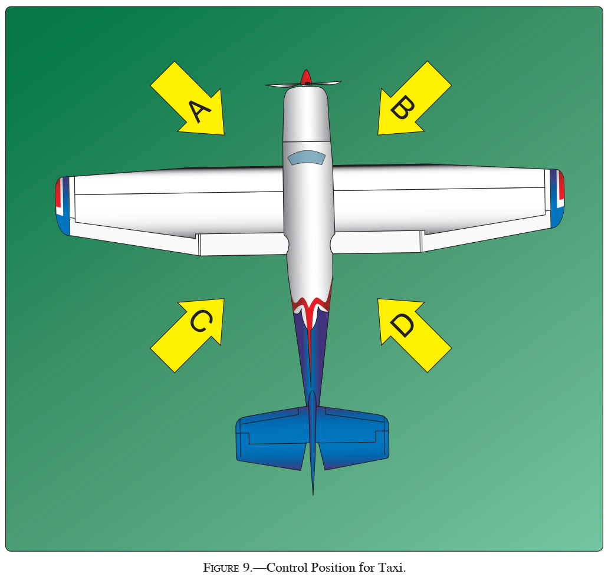
351. (Refer to Figure 9, area B.) How should the flight controls be held while taxiing a tailwheel airplane into a right quartering headwind?
Figure 9
352. (Refer to Figure 9, area C.) How should the flight controls be held while taxiing a tailwheel airplane with a left quartering tailwind?
353. (Refer to Figure 9, area C.) How should the flight controls be held while taxiing a tricycle-gear equipped airplane with a left quartering tailwind?
354. (Refer to Figure 24, area 1.) For information about the parachute jumping at Caddo Mills Airport, refer to
355. What action can a pilot take to aid in cooling an engine that is overheating during a climb?
356. What is one procedure to aid in cooling an engine that is overheating?
357. How is engine operation controlled on an engine equipped with a constant-speed propeller?
358. What is an advantage of a constant-speed propeller?
359. A precaution for the operation of an engine equipped with a constant-speed propeller is to
360. What should be the first action after starting an aircraft engine?
361. Should it become necessary to handprop an airplane engine, it is extremely important that a competent pilot
362. During the preflight inspection who is responsible for determining the aircraft is safe for flight?
363. How should an aircraft preflight inspection be accomplished for the first flight of the day?
364. FAA advisory circulars (some free, others at cost) are available to all pilots and are obtained by
365. The most important rule to remember in the event of a power failure after becoming airborne is to
366. What is the most effective way to use the eyes during night flight?
367. The best method to use when looking for other traffic at night is to
368. The most effective method of scanning for other aircraft for collision avoidance during nighttime hours is to use
369. Airport taxiway edge lights are identified at night by
370. VFR approaches to land at night should be accomplished
371. A slightly high glide slope indication from a precision approach path indicator is
372. A below glide slope indication from a pulsating approach slope indicator is a
373. (Refer to Figure 47.) Illustration A indicates that the aircraft is
Figure 47 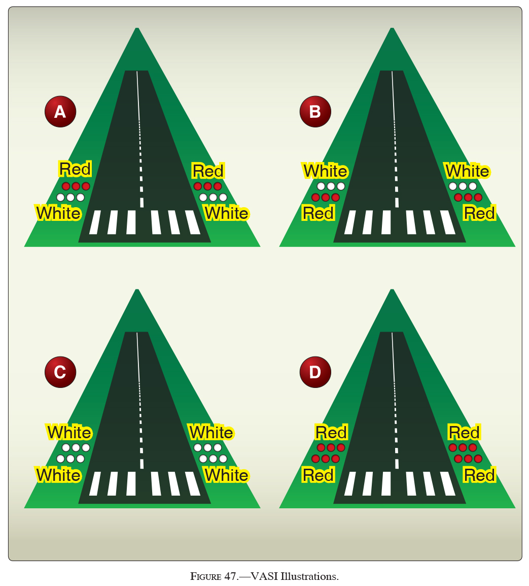
374. (Refer to Figure 47.) VASI lights as shown by illustration C indicate that the airplane is
Figure 47
375. (Refer to Figure 47.) While on final approach to a runway equipped with a standard 2-bar VASI, the lights appear as shown by illustration D. This means that the aircraft is
376. To set the high intensity runway lights on medium intensity, the pilot should click the microphone seven times, and then click it
377. (Refer to Figure 48.) That portion of the runway identified by the letter A may be used for
Figure 48 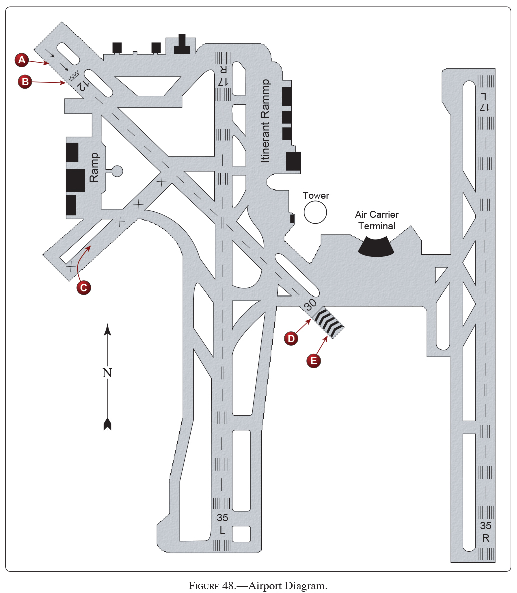
378. (Refer to Figure 48.) According to the airport diagram, which statement is true?
Figure 48
379. (Refer to Figure 48.) What is the difference between area A and area E on the airport depicted?
380. (Refer to Figure 48.) Area C on the airport depicted is classified as a
381. (Refer to Figure 49.) The arrows that appear on the end of the north/south runway indicate that the area
Figure 49 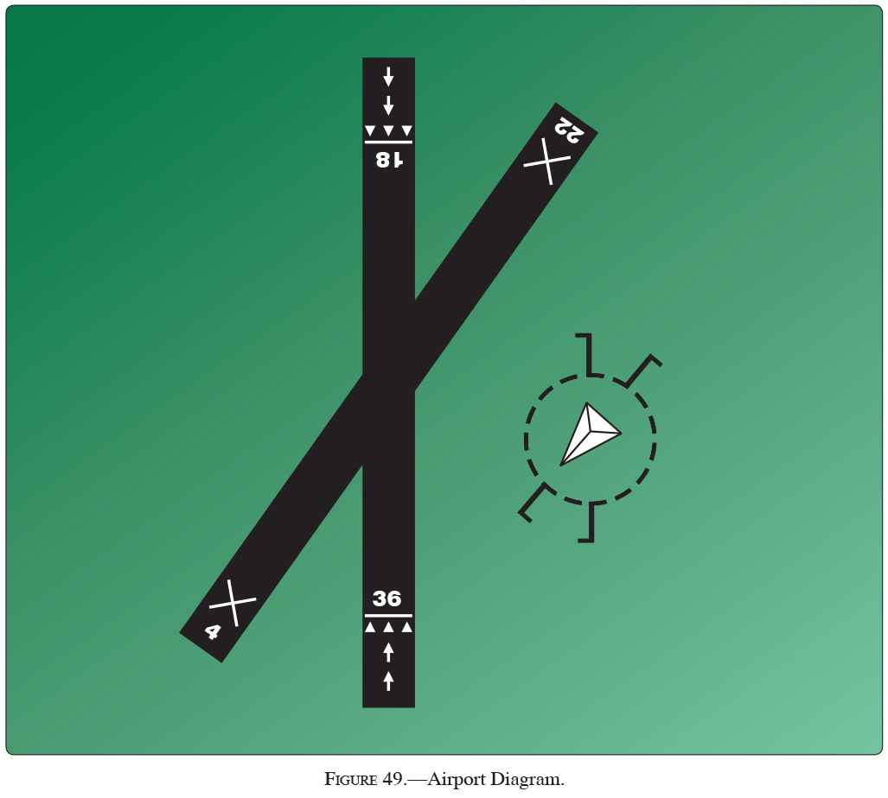
382. The numbers 9 and 27 on a runway indicate that the runway is oriented approximately
383. (Refer to Figure 49.) Select the proper traffic pattern and runway for landing.
Figure 49
384. (Refer to Figure 49.) If the wind is as shown by the landing direction indicator, the pilot should land on
385. (Refer to Figure 50.) The segmented circle indicates that the airport traffic is
Figure 50 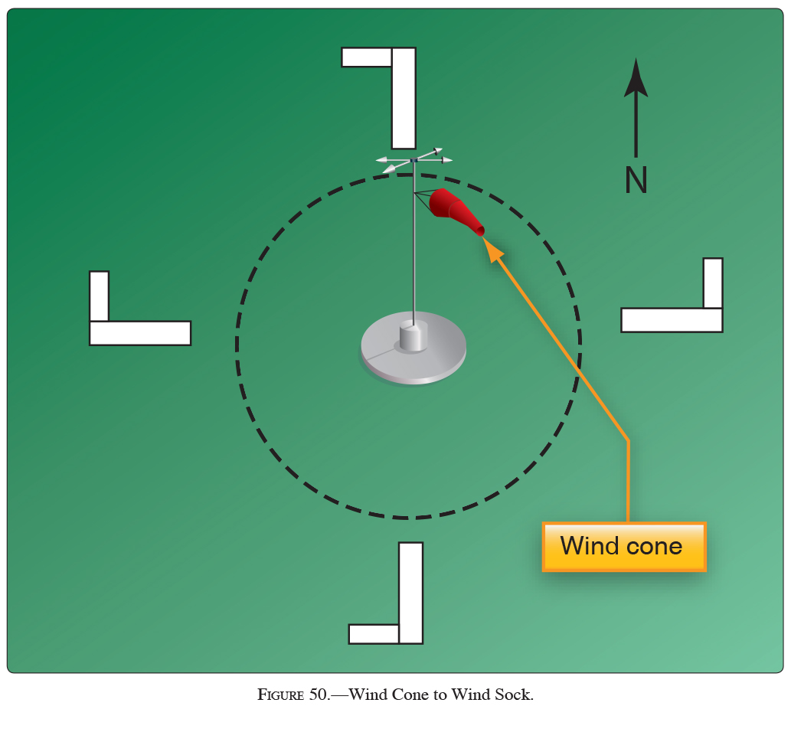
386. (Refer to Figure 50.) The traffic patterns indicated in the segmented circle have been arranged to avoid flights over an area to the
Figure 50
387. (Refer to Figure 50.) The segmented circle indicates that a landing on Runway 27 will be with a
388. (Refer to Figure 50.) Which runway and traffic pattern should be used as indicated by the wind cone in the segmented circle?
389. How should a VFR flight plan be closed at the completion of the flight at a controlled airport?
390. Large accumulations of carbon monoxide in the human body result in
391. What effect does haze have on the ability to see traffic or terrain features during flight?
392. The most effective method of scanning for other aircraft for collision avoidance during daylight hours is to use
393. Which technique should a pilot use to scan for traffic to the right and left during straight-and-level flight?
394. How can you determine if another aircraft is on a collision course with your aircraft?
395. (Refer to Figure 52.) When approaching Lincoln Municipal from the west at noon for the purpose of landing, initial communications should be with
Figure 52
396. (Refer to Figure 52.) Which type radar service is provided to VFR aircraft at Lincoln Municipal?
397. (Refer to Figure 52.) What is the recommended communications procedure for landing at Lincoln Municipal during the hours when the tower is not in operation?
398. (Refer to Figure 52.) Where is Loup City Municipal located with relation to the city?
399. (Refer to Figure 52.) Traffic patterns in effect at Lincoln Municipal are
400. Which statement best defines hypoxia?
401. Rapid or extra deep breathing while using oxygen can cause a condition known as
402. Which would most likely result in hyperventilation?
403. A pilot should be able to overcome the symptoms or avoid future occurrences of hyperventilation by
404. Susceptibility to carbon monoxide poisoning increases as
405. What preparation should a pilot make to adapt the eyes for night flying?
406. The danger of spatial disorientation during flight in poor visual conditions may be reduced by
407. A state of temporary confusion resulting from misleading information being sent to the brain by various sensory organs is defined as
408. Pilots are more subject to spatial disorientation if
409. If a pilot experiences spatial disorientation during flight in a restricted visibility condition, the best way to overcome the effect is to
410. FAA advisory circulars containing subject matter specifically related to Airmen are issued under which subject number?
411. FAA advisory circulars containing subject matter specifically related to Airspace are issued under which subject number?
412. FAA advisory circulars containing subject matter specifically related to Air Traffic Control and General Operations are issued under which subject number?
413. What is it often called when a pilot pushes his or her capabilities and the aircraft's limits by trying to maintain visual contact with the terrain in low visibility and ceiling?
414. What is the antidote when a pilot has a hazardous attitude, such as "Antiauthority"?
415. What is the antidote when a pilot has a hazardous attitude, such as "Impulsivity"?
416. What is the antidote when a pilot has a hazardous attitude, such as "Invulnerability"?
417. What is the antidote when a pilot has a hazardous attitude, such as "Macho"?
418. What is the antidote when a pilot has a hazardous attitude, such as "Resignation"?
419. Who is responsible for determining whether a pilot is fit to fly for a particular flight, even though he or she holds a current medical certificate?
420. What is the one common factor which affects most preventable accidents?
421. What often leads to spatial disorientation or collision with ground/obstacles when flying under Visual Flight Rules (VFR)?
422. What is one of the neglected items when a pilot relies on short and long term memory for repetitive tasks?
423. Who should not participate in the Land and Hold Short Operations (LAHSO) program?
424. Who has final authority to accept or decline any land and hold short (LAHSO) clearance?
425. When should pilots decline a land and hold short (LAHSO) clearance?
426. Where is the "Available Landing Distance" (ALD) data published for an airport that utilizes Land and Hold Short Operations (LAHSO)?
427. What is the minimum visibility for a pilot to receive a land and hold short (LAHSO) clearance?
428. Detonation may occur at high-power settings when
429. Select the four flight fundamentals involved in maneuvering an aircraft.
430. (Refer to Figure 66.) While practicing S-turns, a consistently smaller half-circle is made on one side of the road than on the other, and this turn is not completed before crossing the road or reference line. This would most likely occur in turn
Figure 66 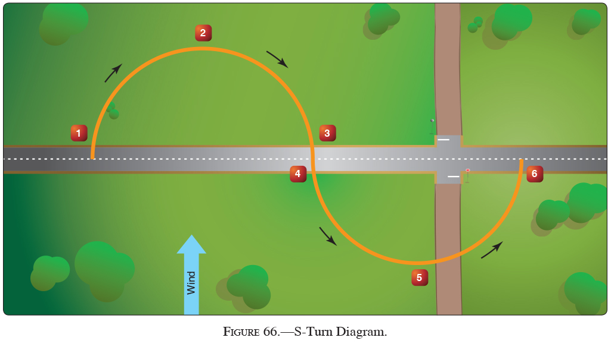
431. Excessively high engine temperatures, either in the air or on the ground, will
432. When approaching taxiway holding lines from the side with the continuous lines, the pilot
433. The numbers 8 and 26 on the approach ends of the runway indicate that the runway is orientated approximately
434. The recommended entry position to an airport traffic pattern is
435. To minimize the side loads placed on the landing gear during touchdown, the pilot should keep the
436. (Refer to Figure 62.) In flying the rectangular course, when would the aircraft be turned less than 90?
Figure 62 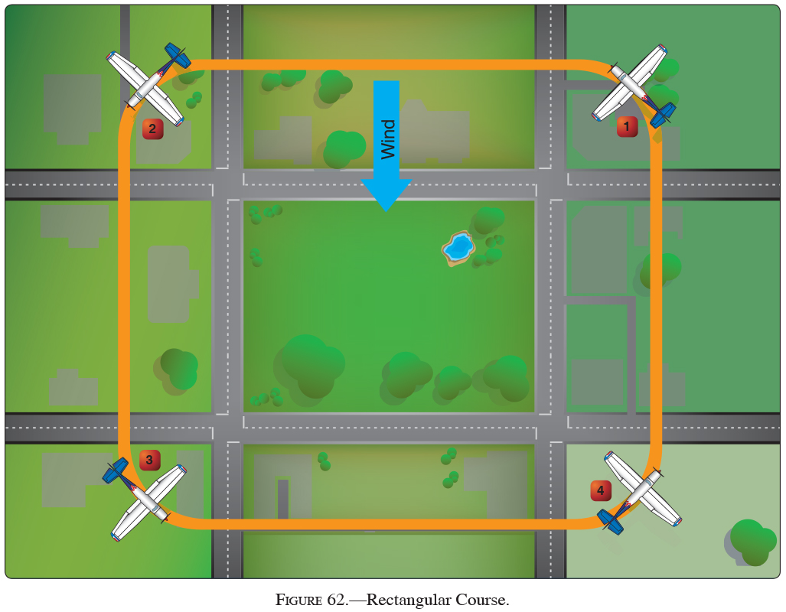
437. Most midair collision accidents occur during
438. Hazardous attitudes occur to every pilot to some degree at some time. What are some of these hazardous attitudes?
439. In the aeronautical decision making (ADM) process, what is the first step in neutralizing a hazardous attitude?
440. Risk management, as part of the aeronautical decision making (ADM) process, relies on which features to reduce the risks associated with each flight?
441. An electrical system failure (battery and alternator) occurs during flight. In this situation, you would
442. What is the purpose of the runway/runway hold position sign
443. To properly purge water from the fuel system of an aircraft equipped with fuel tank sumps and a fuel strainer quick drain, it is necessary to drain fuel from the
444. If an emergency situation requires a downwind landing, pilots should expect a faster
445. Information concerning parachute jumping sites may be found in the
446. When executing an emergency approach to land in a single-engine airplane, it is important to maintain a constant glide speed because variations in glide speed
447. Every physical process of weather is accompanied by, or is the result of, a
448. What causes variations in altimeter settings between weather reporting points?
449. When there is a temperature inversion, you would expect to experience?
450. The most frequent type of ground or surface-based temperature inversion is that which is produced by
451. Which weather conditions should be expected beneath a low-level temperature inversion layer when the relative humidity is high?
452. What are the standard temperature and pressure values for sea level?
453. The wind at 5,000 feet AGL is southwesterly while the surface wind is southerly. This difference in direction is primarily due to
454. What is meant by the term "dewpoint"?
455. The amount of water vapor which air can hold depends on the
456. Clouds, fog, or dew will always form when
457. What are the processes by which moisture is added to unsaturated air?
458. Which conditions result in the formation of frost?
459. The presence of ice pellets at the surface is evidence that there
460. What measurement can be used to determine the stability of the atmosphere?
461. What would decrease the stability of an air mass?
462. What is a characteristic of stable air?
463. When warm, moist, stable air flows upslope, it
464. If an unstable air mass is forced upward, what type clouds can be expected?
465. What feature is associated with a temperature inversion?
466. What is the approximate base of the cumulus clouds if the surface air temperature at 1,000 feet MSL is 70 F and the dewpoint is 48 F?
467. At approximately what altitude above the surface would the pilot expect the base of cumuliform clouds if the surface air temperature is 82 F and the dewpoint is 38 F?
468. What are characteristics of a moist, unstable air mass?
469. What are characteristics of unstable air?
470. A stable air mass is most likely to have which characteristic?
471. The suffix "nimbus," used in naming clouds, means
472. Clouds are divided into four families according to their
473. An almond or lens-shaped cloud which appears stationary, but which may contain winds of 50 knots or more, is referred to as
474. Crests of standing mountain waves may be marked by stationary, lens-shaped clouds known as
475. What clouds have the greatest turbulence?
476. What cloud types would indicate convective turbulence?
477. The boundary between two different air masses is referred to as a
478. One of the most easily recognized discontinuities across a front is
479. One weather phenomenon which will always occur when flying across a front is a change in the
480. Steady precipitation preceding a front is an indication of
481. Possible mountain wave turbulence could be anticipated when winds of 40 knots or greater blow
482. Where does wind shear occur?
483. When may hazardous wind shear be expected?
484. A pilot can expect a wind-shear zone in a temperature inversion whenever the windspeed at 2,000 to 4,000 feet above the surface is at least
485. One in-flight condition necessary for structural icing to form is
486. In which environment is aircraft structural ice most likely to have the highest accumulation rate?
487. The conditions necessary for the formation of cumulonimbus clouds are a lifting action and
488. What feature is normally associated with the cumulus stage of a thunderstorm?
489. Which weather phenomenon signals the beginning of the mature stage of a thunderstorm?
490. What conditions are necessary for the formation of thunderstorms?
491. During the life cycle of a thunderstorm, which stage is characterized predominately by downdrafts?
492. Thunderstorms reach their greatest intensity during the
493. Thunderstorms which generally produce the most intense hazard to aircraft are
494. A nonfrontal, narrow band of active thunderstorms that often develop ahead of a cold front is a known as a
495. If there is thunderstorm activity in the vicinity of an airport at which you plan to land, which hazardous atmospheric phenomenon might be expected on the landing approach?
496. What situation is most conducive to the formation of radiation fog?
497. If the temperature/dewpoint spread is small and decreasing, and the temperature is 62 F, what type weather is most likely to develop?
498. In which situation is advection fog most likely to form?
499. What types of fog depend upon wind in order to exist?
500. Low-level turbulence can occur and icing can become hazardous in which type of fog?
501. Which weather phenomenon is always associated with a thunderstorm?
502. When telephoning a weather briefing facility for preflight weather information, pilots should state
503. To get a complete weather briefing for the planned flight, the pilot should request
504. Which type weather briefing should a pilot request, when departing within the hour, if no preliminary weather information has been received?
505. Which type of weather briefing should a pilot request to supplement mass disseminated data?
506. To update a previous weather briefing, a pilot should request
507. A weather briefing that is provided when the information requested is 6 or more hours in advance of the proposed departure time is
508. When requesting weather information for the following morning, a pilot should request
509. (Refer to Figure 12.) Which of the reporting stations have VFR weather?
Figure 12 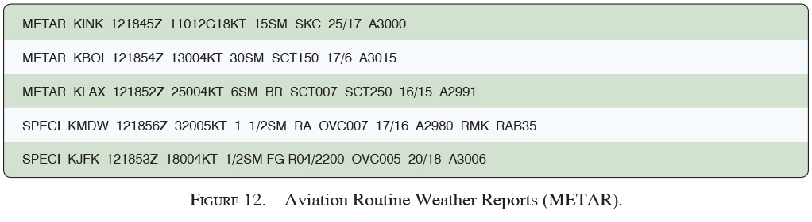
510. For aviation purposes, ceiling is defined as the height above the Earth's surface of the
511. (Refer to Figure 12.) The wind direction and velocity at KJFK is from
Figure 12
512. (Refer to Figure 12.) What are the wind conditions at Wink, Texas (KINK)?
513. (Refer to Figure 12.) The remarks section for KMDW has RAB35 listed. This entry means
514. (Refer to Figure 12.) What are the current conditions depicted for Chicago Midway Airport (KMDW)?
515. (Refer to Figure 14.) The base and tops of the overcast layer reported by a pilot are
Figure 14 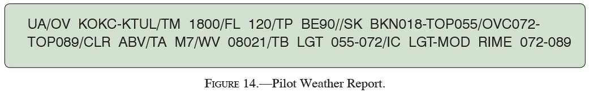
516. (Refer to Figure 14.) The wind and temperature at 12,000 feet MSL as reported by a pilot are
Figure 14
517. (Refer to Figure 14.) If the terrain elevation is 1,295 feet MSL, what is the height above ground level of the base of the ceiling?
518. (Refer to Figure 14.) The intensity of the turbulence reported at a specific altitude is
519. (Refer to Figure 14.) The intensity and type of icing reported by a pilot is
520. (Refer to Figure 15.) What is the valid period for the TAF for KMEM?
Figure 15 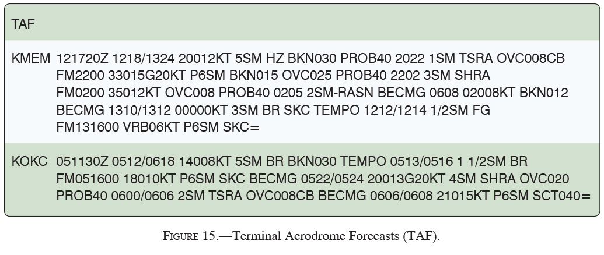
521. (Refer to Figure 15.) In the TAF for KMEM, what does "SHRA" stand for?
Figure 15
522. (Refer to Figure 15.) Between 1000Z and 1200Z the visibility at KMEM is forecast to be?
523. (Refer to Figure 15.) What is the forecast wind for KMEM from 1600Z until the end of the forecast?
524. (Refer to Figure 15.) In the TAF from KOKC, the "FM (FROM) Group" is forecast for the hours from 1600Z to 2200Z with the wind from
525. (Refer to Figure 15.) In the TAF from KOKC, the clear sky becomes
526. (Refer to Figure 15.) During the time period from 0600Z to 0800Z, what visibility is forecast for KOKC?
527. (Refer to Figure 15.) The only cloud type forecast in TAF reports is
528. To determine the freezing level and areas of probable icing aloft, the pilot should refer to the
529. What is indicated when a current CONVECTIVE SIGMET forecasts thunderstorms?
530. What information is contained in a CONVECTIVE SIGMET?
531. SIGMET's are issued as a warning of weather conditions hazardous to which aircraft?
532. Which in-flight advisory would contain information on severe icing not associated with thunderstorms?
533. AIRMETs are advisories of significant weather phenomena but of lower intensities than SIGMETs and are intended for dissemination to
534. (Refer to Figure 17.) What wind is forecast for STL at 9,000 feet?
Figure 17 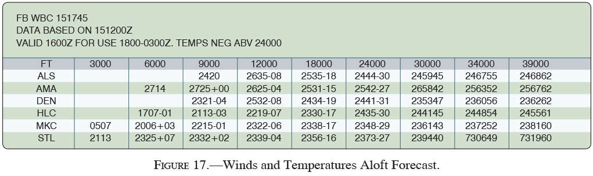
535. (Refer to Figure 17.) What wind is forecast for STL at 12,000 feet?
Figure 17
536. (Refer to Figure 17.) Determine the wind and temperature aloft forecast for DEN at 9,000 feet.
537. (Refer to Figure 17.) Determine the wind and temperature aloft forecast for MKC at 6,000 feet.
538. (Refer to Figure 17.) What wind is forecast for STL at 12,000 feet?
539. What values are used for Winds Aloft Forecasts?
540. When the term "light and variable" is used in reference to a Winds Aloft Forecast, the coded group and windspeed is
541. Radar weather reports are of special interest to pilots because they indicate
542. (Refer to Figure 19.) How are Significant Weather Prognostic Charts best used by a pilot?
Figure 19
543. (Refer to Figure 19.) Interpret the weather symbol depicted in Utah on the 12-hour Significant Weather Prognostic Chart.
544. You plan to phone a weather briefing facility for preflight weather information. You should
545. What should pilots state when telephoning a weather briefing facility for preflight weather information?
546. When telephoning a weather briefing facility for preflight weather information, pilots should state
547. What weather information can a pilot get from a Flight Service Station when enroute?
548. With respect to the certification of airmen, which are categories of aircraft?
549. With respect to the certification of airmen, which is a class of aircraft?
550. With respect to the certification of aircraft, which is a category of aircraft?
551. With respect to the certification of aircraft, which is a class of aircraft?
552. The definition of nighttime is
553. Preventive maintenance has been performed on an aircraft. What paperwork is required?
554. Which operation would be described as preventive maintenance?
555. Which operation would be described as preventive maintenance?
556. What document(s) must be in your personal possession or readily accessible in the aircraft while operating as pilot in command of an aircraft?
557. When must a current certificate be in the pilot's personal possession?
558. A recreational or private pilot acting as pilot in command, or in any other capacity as a required pilot flight crewmember, must have in their personal possession while aboard the aircraft a current
559. Each person who holds a pilot certificate or a medical certificate shall present it for inspection upon the request of the Administrator, the National Transportation Safety Board, or any
560. A Third-Class Medical Certificate is issued to a 36-year-old pilot on August 10, this year. To exercise the privileges of a Private Pilot Certificate, the medical certificate will be valid until midnight on
561. A Third-Class Medical Certificate is issued to a 51-year-old pilot on May 3, this year. To exercise the privileges of a Private Pilot Certificate, the medical certificate will be valid until midnight on
562. For private pilot operations, a Second-Class Medical Certificate issued to a 42-year-old pilot on July 15, this year, will expire at midnight on
563. For private pilot operations, a First-Class Medical Certificate issued to a 23-year-old pilot on October 21, this year, will expire at midnight on
564. The pilot in command is required to hold a type rating in which aircraft?
565. What is the definition of a high-performance airplane?
566. Before a person holding a private pilot certificate may act as pilot in command of a high-performance airplane, that person must have
567. In order to act as pilot in command of a high performance airplane, a pilot must have
568. To act as pilot in command of an aircraft carrying passengers, a pilot must show by logbook endorsement the satisfactory completion of a flight review or completion of a pilot proficiency check within the preceding
569. If recency of experience requirements for night flight are not met and official sunset is 1830, the latest time passengers may be carried is
570. To act as pilot in command of an aircraft carrying passengers, the pilot must have made at least three takeoffs and three landings in an aircraft of the same category, class, and if a type rating is required, of the same type, within the preceding
571. To act as pilot in command of an aircraft carrying passengers, the pilot must have made three takeoffs and three landings within the preceding 90 days in an aircraft of the same
572. The takeoffs and landings required to meet the recency of experience requirements for carrying passengers in a tailwheel airplane
573. The three takeoffs and landings that are required to act as pilot in command at night must be done during the time period from
574. To meet the recency of experience requirements to act as pilot in command carrying passengers at night, a pilot must have made at least three takeoffs and three landings to a full stop within the preceding 90 days in
575. If a certificated pilot changes permanent mailing address and fails to notify the FAA Airmen Certification Branch of the new address, the pilot is entitled to exercise the privileges of the pilot certificate for a period of only
576. A certificated private pilot may not act as pilot in command of an aircraft towing a glider unless there is entered in the pilot's logbook a minimum of
577. To act as pilot in command of an aircraft towing a glider, a pilot is required to have made within the preceding 12 months
578. In regard to privileges and limitations, a private pilot may
579. According to regulations pertaining to privileges and limitations, a private pilot may
580. What exception, if any, permits a private pilot to act as pilot in command of an aircraft carrying passengers who pay for the flight?
581. The final authority as to the operation of an aircraft is the
582. If an in-flight emergency requires immediate action, the pilot in command may
583. When must a pilot who deviates from a regulation during an emergency send a written report of that deviation to the Administrator?
584. Where may an aircraft's operating limitations be found?
585. Under what conditions may objects be dropped from an aircraft?
586. A person may not act as a crewmember of a civil aircraft if alcoholic beverages have been consumed by that person within the preceding
587. Under what condition, if any, may a pilot allow a person who is obviously under the influence of drugs to be carried aboard an aircraft?
588. No person may attempt to act as a crewmember of a civil aircraft with
589. Which preflight action is specifically required of the pilot prior to each flight?
590. Preflight action, as required for all flights away from the vicinity of an airport, shall include
591. In addition to other preflight actions for a VFR flight away from the vicinity of the departure airport, regulations specifically require the pilot in command to
592. Flight crewmembers are required to keep their safety belts and shoulder harnesses fastened during
593. Which best describes the flight conditions under which flight crewmembers are specifically required to keep their safety belts and shoulder harnesses fastened?
594. With respect to passengers, what obligation, if any, does a pilot in command have concerning the use of safety belts?
595. With certain exceptions, safety belts are required to be secured about passengers during
596. Safety belts are required to be properly secured about which persons in an aircraft and when?
597. No person may operate an aircraft in formation flight
598. Which aircraft has the right-of-way over all other air traffic?
599. What action is required when two aircraft of the same category converge, but not head-on?
600. Which aircraft has the right-of-way over the other aircraft listed?
601. An airplane and an airship are converging. If the airship is left of the airplane's position, which aircraft has the right-of-way?
602. Which aircraft has the right-of-way over the other aircraft listed?
603. What action should the pilots of a glider and an airplane take if on a head-on collision course?
604. When two or more aircraft are approaching an airport for the purpose of landing, the right-of-way belongs to the aircraft
605. A seaplane and a motorboat are on crossing courses. If the motorboat is to the left of the seaplane, which has the right-of-way?
606. Unless otherwise authorized, what is the maximum indicated airspeed at which a person may operate an aircraft below 10,000 feet MSL?
607. Unless otherwise authorized, the maximum indicated airspeed at which aircraft may be flown when at or below 2,500 feet AGL and within 4 nautical miles of the primary airport of Class C airspace is
608. When flying in the airspace underlying Class B airspace, the maximum speed authorized is
609. When flying in a VFR corridor designated through Class B airspace, the maximum speed authorized is
610. Except when necessary for takeoff or landing, what is the minimum safe altitude for a pilot to operate an aircraft anywhere?
611. Except when necessary for takeoff or landing, what is the minimum safe altitude required for a pilot to operate an aircraft over congested areas?
612. Except when necessary for takeoff or landing, what is the minimum safe altitude required for a pilot to operate an aircraft over other than a congested area?
613. Except when necessary for takeoff or landing, an aircraft may not be operated closer than what distance from any person, vessel, vehicle, or structure?
614. If an altimeter setting is not available before flight, to which altitude should the pilot adjust the altimeter?
615. Prior to takeoff, the altimeter should be set to which altitude or altimeter setting?
616. At what altitude shall the altimeter be set to 29.92, when climbing to cruising flight level?
617. When an ATC clearance has been obtained, no pilot in command may deviate from that clearance, unless that pilot obtains an amended clearance. The one exception to this regulation is
618. When would a pilot be required to submit a detailed report of an emergency which caused the pilot to deviate from an ATC clearance?
619. What action, if any, is appropriate if the pilot deviates from an ATC instruction during an emergency and is given priority?
620. A steady green light signal directed from the control tower to an aircraft in flight is a signal that the pilot
621. Which light signal from the control tower clears a pilot to taxi?
622. If the control tower uses a light signal to direct a pilot to give way to other aircraft and continue circling, the light will be
623. A flashing white light signal from the control tower to a taxiing aircraft is an indication to
624. An alternating red and green light signal directed from the control tower to an aircraft in flight is a signal to
625. While on final approach for landing, an alternating green and red light followed by a flashing red light is received from the control tower. Under these circumstances, the pilot should
626. Which is the correct traffic pattern departure procedure to use at a noncontrolled airport?
627. What is the specific fuel requirement for flight under VFR during daylight hours in an airplane?
628. What is the specific fuel requirement for flight under VFR at night in an airplane?
629. Which cruising altitude is appropriate for a VFR flight on a magnetic course of 135?
630. Which VFR cruising altitude is acceptable for a flight on a Victor Airway with a magnetic course of 175? The terrain is less than 1,000 feet.
631. Which VFR cruising altitude is appropriate when flying above 3,000 feet AGL on a magnetic course of 185?
632. Each person operating an aircraft at a VFR cruising altitude shall maintain an odd-thousand plus 500-foot altitude while on a
633. In addition to a valid Airworthiness Certificate, what documents or records must be aboard an aircraft during flight?
634. When must batteries in an emergency locator transmitter (ELT) be replaced or recharged, if rechargeable?
635. When are non-rechargeable batteries of an emergency locator transmitter (ELT) required to be replaced?
636. Except in Alaska, during what time period should lighted position lights be displayed on an aircraft?
637. When operating an aircraft at cabin pressure altitudes above 12,500 feet MSL up to and including 14,000 feet MSL, supplemental oxygen shall be used during
638. Unless each occupant is provided with supplemental oxygen, no person may operate a civil aircraft of U.S. registry above a maximum cabin pressure altitude of
639. An operable 4096-code transponder with an encoding altimeter is required in which airspace?
640. Which is normally prohibited when operating a restricted category civil aircraft?
641. Unless otherwise specifically authorized, no person may operate an aircraft that has an experimental certificate
642. The responsibility for ensuring that an aircraft is maintained in an airworthy condition is primarily that of the
643. The responsibility for ensuring that maintenance personnel make the appropriate entries in the aircraft maintenance records indicating the aircraft has been approved for return to service lies with the
644. Completion of an annual inspection and the return of the aircraft to service should always be indicated by
645. If an alteration or repair substantially affects an aircraft's operation in flight, that aircraft must be test flown by an appropriately-rated pilot and approved for return to service prior to being operated
646. Before passengers can be carried in an aircraft that has been altered in a manner that may have appreciably changed its flight characteristics, it must be flight tested by an appropriately-rated pilot who holds at least a
647. An aircraft's annual inspection was performed on July 12, this year. The next annual inspection will be due no later than
648. To determine the expiration date of the last annual aircraft inspection, a person should refer to the
649. How long does the Airworthiness Certificate of an aircraft remain valid?
650. What aircraft inspections are required for rental aircraft that are also used for flight instruction?
651. An aircraft had a 100-hour inspection when the tachometer read 1259.6. When is the next 100-hour inspection due?
652. A 100-hour inspection was due at 3302.5 hours. The 100-hour inspection was actually done at 3309.5 hours. When is the next 100-hour inspection due?
653. No person may use an ATC transponder unless it has been tested and inspected within at least the preceding
654. Which records or documents shall the owner or operator of an aircraft keep to show compliance with an applicable Airworthiness Directive?
655. If an aircraft is involved in an accident which results in substantial damage to the aircraft, the nearest NTSB field office should be notified
656. Which incident requires an immediate notification to the nearest NTSB field office?
657. Which incident would necessitate an immediate notification to the nearest NTSB field office?
658. Which incident requires an immediate notification be made to the nearest NTSB field office?
659. May aircraft wreckage be moved prior to the time the NTSB takes custody?
660. The pilot of an aircraft that has been involved in an accident is required to file an NTSB accident report within how many days?
661. The operator of an aircraft that has been involved in an incident is required to submit a report to the nearest field office of the NTSB
662. Who is primarily responsible for maintaining an aircraft in airworthy condition?
663. Prior to starting each maneuver, pilots should
664. During a night flight, you observe a steady red light and a flashing red light ahead and at the same altitude. What is the general direction of movement of the other aircraft?
665. During a night flight, you observe a steady white light and a flashing red light ahead and at the same altitude. What is the general direction of movement of the other aircraft?
666. During a night flight, you observe steady red and green lights ahead and at the same altitude. What is the general direction of movement of the other aircraft?
667. If the aircraft's radio fails, what is the recommended procedure when landing at a controlled airport?
668. After landing at a tower-controlled airport, when should the pilot contact ground control?
669. If instructed by ground control to taxi to Runway 9, the pilot may proceed
670. What procedure is recommended when climbing or descending VFR on an airway?
671. When activated, an emergency locator transmitter (ELT) transmits on
672. When must the battery in an emergency locator transmitter (ELT) be replaced (or recharged if the battery is rechargeable)?
673. When may an emergency locator transmitter (ELT) be tested?
674. Which procedure is recommended to ensure that the emergency locator transmitter (ELT) has not been activated?
675. An ATC clearance provides
676. What should an owner or operator know about Airworthiness Directives (AD's)?
677. May a pilot operate an aircraft that is not in compliance with an Airworthiness Directive (AD)?
678. What regulation allows a private pilot to perform preventive maintenance?
679. Who may perform preventive maintenance on an aircraft and approve it for return to service?1. Student or Recreational pilot.2. Private or Commercial pilot.3. None of the above.
680. The airworthiness of an aircraft can be determined by a preflight inspection and a
681. Who is responsible for ensuring appropriate entries are made in maintenance records indicating the aircraft has been approved for return to service?
682. Who is responsible for ensuring Airworthiness Directives (AD's) are compiled with?
683. Where may an aircraft's operating limitations be found if the aircraft has an Experimental or Special light-sport airworthiness certificate?
684. As Pilot in Command of an aircraft, under which situation can you deviate from an ATC clearance?
685. How soon after the conviction for driving while intoxicated by alcohol or drugs shall it be reported to the FAA, Civil Aviation Security Division?
686. On the calculator side of the flight computer, distance in miles is always found on which scale?
687. On the calculator side of the flight computer, time is always found on which scale(s)?
688. How fast are you flying if you travel 2 miles in 1 minute?
689. How fast are you flying if you travel 3 miles in 2 minutes?
690. How long will it take you to fly 300 miles at 120 miles per hour
691. How far will you travel if you fly at 100 miles per hour for 2 hours and 30 minutes?
692. How fast are you flying if you travel 18 miles in 8 minutes?
693. How far will you travel if you fly at 110 miles per hour for 11 minutes?
694. A basic rule to remember when using the calculator side of the flight computer is
695. A basic rule to remember when using the calculator side of the flight computer is
696. If you are using fuel at the rate of 8 gallons per hour, how many gallons will you use in 3 hours and 30 minutes?
697. How many gallons per hour are you using if you use 36 gallons in 4 hours and 30 minutes?
698. When using a navigation plotter, it is important to note that
699. Typical scales on the navigation plotter are
700. True course is
701. Magnetic course is
702. Magnetic heading is
703. True airspeed is
704. Which equation is correct?
705. Once you have determined magnetic heading, compass heading is found by applying
706. The wind side of the flight computer is used to determine
707. When solving a wind problem on the wind side of the flight computer, the first information to enter on the wind side is
708. Center of gravity can be found by
709. In weight and balance calculations, arm is
710. The VFR pilot flying in Class G airspace
711. You know when looking at a chart that the floor of Class E airspace is 700 feet AGL when it's within
712. When turning onto a taxiway from another taxiway, the "taxiway directional sign" indicates
713. The "runway hold position" sign denotes
714. (Refer to Figure 65.) The red symbol at sign D would most likely be found
Figure 65 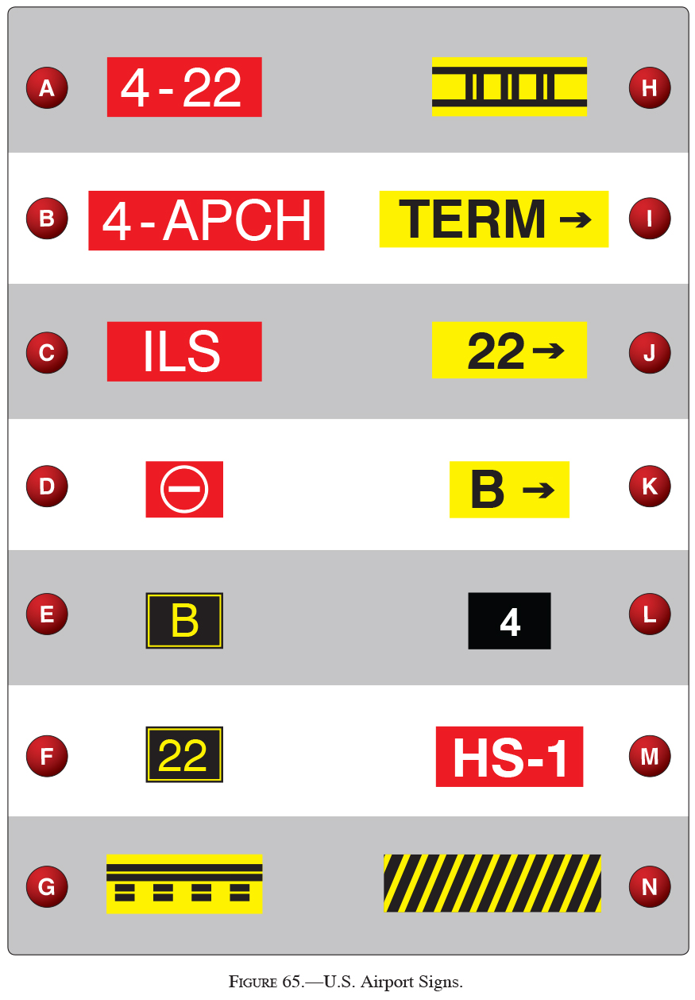
715. "Runway hold position" markings on the taxiway
716. (Refer to Figure 65.) The pilot generally calls ground control after landing when the aircraft is completely clear of the runway. This is when the aircraft
Figure 65
717. The "taxiway ending" marker
718. What information is contained in the Notices to Airman Publication (NTAP)?
719. Maintenance records show the last transponder inspection was performed on September 1, 2014. The next inspection will be due no later than
720. When should pilots state their position on the airport when calling the tower for takeoff?
721. When a stressful situation is encountered in flight, an abnormal increase in the volume of air breathed in and out can cause a condition known as
722. One alcoholic drink (one ounce of liquor, one bottle of beer, or four ounces of wine) can be detected in the breath and blood for at least
723. Who is responsible for determining if an aircraft is in condition for safe flight?
724. A pilot convicted of operating a motor vehicle while either intoxicated by, impaired by, or under the influence of alcohol or a drug is required to provide a
725. A pilot convicted of a motor vehicle offense involving alcohol or drugs is required to provide a written report to the
726. A pilot convicted for the violation of any Federal or State statute relating to the process, manufacture, transportation, distribution, or sale of narcotic drugs is grounds for
727. A pilot convicted of operating an aircraft as a crewmember under the influence of alcohol, or using drugs that affect the person's faculties, is grounds for
728. If the ground wire between the magneto and the ignition switch becomes disconnected, the most noticeable result will be that the engine
729. Which incident involving propellers is reportable to the NTSB under Part 830?
730. The complete loss of information of what percentage of the electronic display is considered to be a reportable incident by the NTSB?
731. Which of the following incidents with a turbine aircraft requires immediate NTSB notification?
732. Which situation is reportable to the NTSB if your aircraft is equipped with ACAS Airborne Collision and Avoidance System?
733. A Certificate of Aircraft Registration expires
734. How can a military airport be identified at night?
735. What does the outbound destination sign identify?
736. If a recreational or private pilot had a flight review on August 8, this year, when is the next flight review required?
737. When operating under VFR below 18,000 feet MSL, unless otherwise authorized, what transponder code should be selected?
738. If the ground wire between the magneto and the ignition switch becomes disconnected, the engine
739. When making routine transponder code changes, pilots should avoid inadvertent selection of which code?
740. When making routine transponder code changes, pilots should avoid inadvertent selection of which code?
741. Deviation error of the magnetic compass is caused by
742. (Refer to Figure 64.) Which marking indicates a vehicle lane?
Figure 64 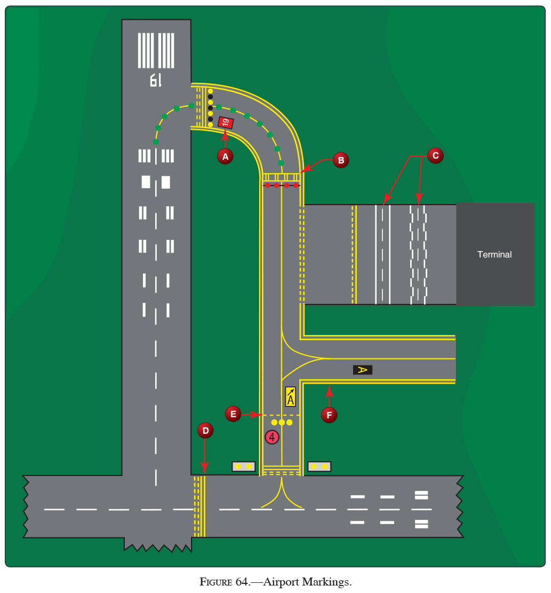
743. The 'yellow demarcation bar' marking indicates
744. This sign is a visual clue that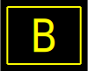
745. This sign confirms your position on
746. From the cockpit, this marking confirms the aircraft to be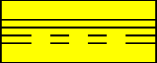
747. The Aeronautical Information Manual (AIM) specifically encourages pilots to turn on their landing lights when operating below 10,000 feet, day or night, and especially when operating
748. Pre-takeoff briefing of passengers about the use of seatbelts for a flight is the responsibility of
749. A pilot and two passengers landed on a 2,100 foot east-west gravel strip with an elevation of 1,800 feet. The temperature is warmer than expected and after computing the density altitude it is determined the takeoff distance over a 50 foot obstacle is 1,980 feet. The airplane is 75 pounds under gross weight. What would be the best choice?
750. The destination airport has one runway, "08-26", and the wind is calm. The normal approach in calm wind is a left hand pattern to runway 08. There is no other traffic at the airport. A thunderstorm about 6 miles west is beginning its mature stage, and rain is starting to reach the ground. The pilot decides to
751. A pilot experiencing the effects of hyperventilation should be able to restore the proper carbon dioxide level in the body by
752. A lack of orientation with regard to the position, attitude, or movement of the aircraft in space is defined as
753. How far will an aircraft travel in 7.5 minutes with a groundspeed of 114 knots?
754. (Refer to Figure 20, area 1.) The NALF Fentress (NFE) Airport is in what type of airspace?
755. Which approach and landing objective is assured when the pilot remains on the proper glidepath of the VASI?
756. What symbol would indicate a VORTAC location on an airport?
757. Which of the symbols depicted with a hexagon represents a VOR-DME?
758. A VORTAC station is represented by
759. If Receiver Autonomous Integrity Monitoring (RAIM) capability is lost in-flight,
760. While on a VFR cross country and not in contact with ATC, what frequency would you use in the event of an emergency?
761. (Refer to Figure 78.) What are the basic VFR weather minima required to takeoff from the Onawa, IA (K36) airport during the day?
Figure 78 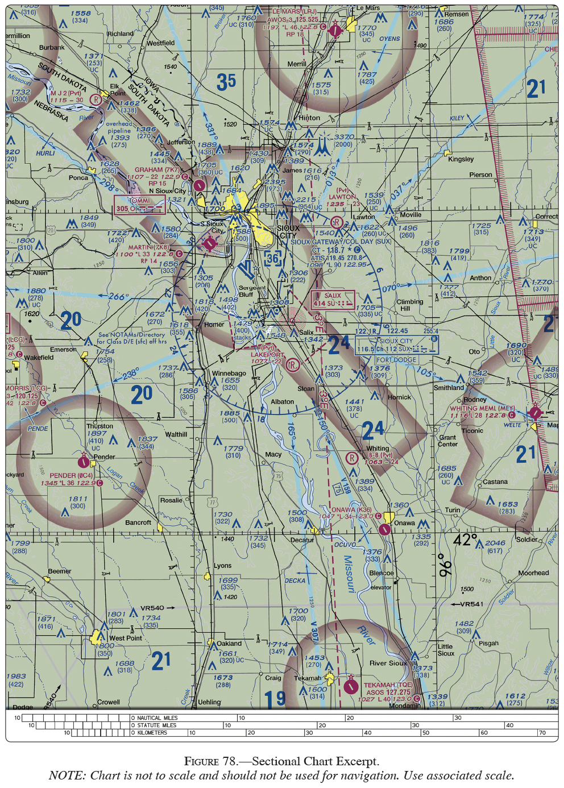
762. When speaking to an AFSS weather briefer you should state
763. (Refer to Figure 35.) Approximately what true airspeed should a pilot expect with full throttle at 10,500 feet with a temperature of 36 F above standard?
764. The purpose of Military Training Routes, charted as VFR Military Training Routes (VR) and IFR Military Training Routes (IR) on sectional charts, is to ensure the greatest practical level of safety for all flight operations and to allow the military to conduct
765. Who is responsible for filing a Near Midair Collision (NMAC) Report?
766. Pilots and/or flight crewmembers involved in NMAC occurrences are urged to report each incident immediately:
767. Pilot fatigue is
768. If a plane is purchased that has been operating with a Dealership Certificate of Registration, how long is the registration good for after purchase?
769. A GPS with an expired database may be used
770. (Refer to Figure 25, area 5.) The VOR is tuned to the Ranger VORTAC. The omnibearing selector (OBS) is set on 256, with a TO indication, and a left course deviation indicator (CDI) deflection. What is the aircraft's position from the VORTAC?
771. Can a GPS be used as an altimeter?
772. (Refer to Figure 71, area 8.) What is the minimum visibility required under VFR for takeoff from the Auburn Airport at sunrise?
Figure 71 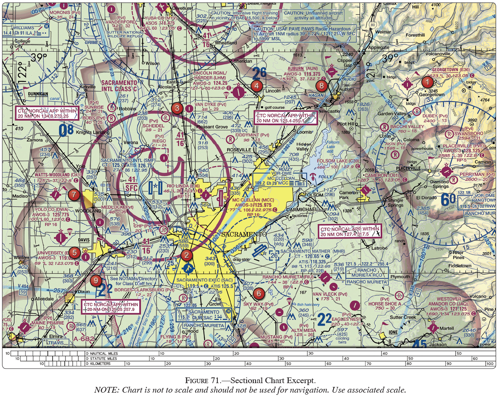
773. Under which conditions may a pilot fly under VFR within 60 nautical miles of the DCA VOR in Washington, D.C.?
774. During which phase of flight is a pilot at increased odds of experiencing a somatogravic illusion?
775. Who may perform an update of a GPS database?
776. It is the responsibility of the pilot and crew to report a near midair collision as a result of proximity of at least
777. The airspace system designations used throughout the United States
778. Uncontrolled airspace is
779. The basic VFR minimum visibility at night for Class G, E, D, and C airspace below 10,000 feet MSL is 3 statute miles. An exception to that minimum is when below 1,200 feet above the surface and the visibility is at least 1 but less than 3 statute miles
780. The angle of attack for a propeller is defined as
781. Cumulonimbus Mamma clouds are associated with
782. What is an advantage of an attitude indicator that is displayed digitally?
783. The Air Data Computer or ADC
784. Glass cockpit aircraft refer to
785. A left turn at this intersection would place the aircraft
786. What antidotal phrase can help reverse the hazardous attitude of impulsivity?
787. Your cousin wants you to take him flying. You must have made at least three takeoffs and three landings in your aircraft within the preceding
788. A pilot can operate under BasicMed even if the aircraft she or he is flying
789. Under the general BasicMed rules a pilot can fly
790. A pilot operating under BasicMed may
791. To qualify for BasicMed, a pilot must have
792. A pilot is operating under BasicMed rules and completes the required medical education course on April 10th of this year. How long is this course completion good for?
793. A pilot operating under BasicMed gets a comprehensive medical examination (CME) on May 14th of this year. When is the next CME due?
794. Select the true statement about BasicMed medical certificate requirements:
795. A pilot operating under BasicMed is restricted to flying
796. If a pilot operates under the rules of BasicMed, they can still
797. A pilot operating under BasicMed completed the online medical education course on July 2nd of this year. This course completion is good until
798. A pilot who wants to operate under BasicMed completed a comprehensive medical examination (CME) with the examining doctor signing the checklist on November 24th of this year. This meets the requirement until
799. Which of the following is true about the comprehensive medical exam (CME)?
800. To fly under BasicMed, a pilot must carry onboard the aircraft
801. When you adjust the fuel/air ratio with the mixture control for a change of altitude, the ratio you are changing is the
802. When departing a non-towered airport traffic pattern (left-hand traffic), you continue straight out or
803. In what controlled airspace are you not required to contact ATC when flying in VMC?
804. Which transponder code should be used when in DISTRESS or for a general EMERGENCY?
805. What is the definition of load factor?
806. (Refer to Figure 22.) What are the visibility and cloud clearance requirements in an airplane at night when conducting takeoffs and landings at Shoshone County Airport (Area 3) if the pattern altitude is 1,000 feet AGL?
807. Which V-speed represents best-angle-of-climb speed?
808. The speed at which a single flight control can be moved, one time, to its full defection without risk of damage to the aircraft is
809. Where are official specifications of aircraft, propeller, and engines found?
810. To use an MEL a pilot
811. The ceiling of Class D airspace is
812. (Refer to FAA-CT-8080-2G, Figure 75, west of area 6.) During preflight planning, your course is plotted to fly through R-2305. Where would you find additional information regarding this airspace?
Figure 75 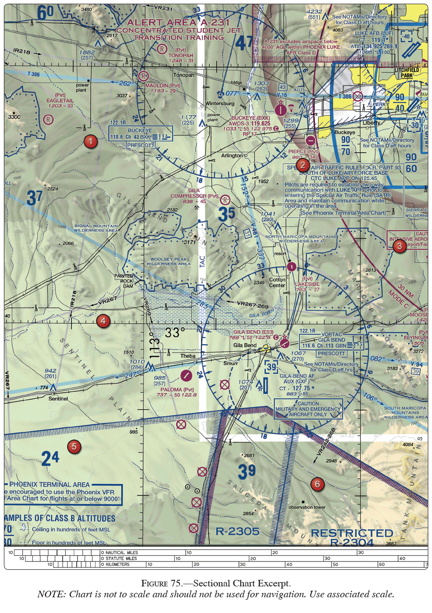
813. Eye movements during daytime collision avoidance scanning should
814. ADS-B-Out equipment is required
815. ADS-B-Out equipment is not required
816. What document(s) is/are required to be displayed in the cockpit or cabin entrance of the plane, legible to passengers or crew?
817. The mature stage of a thunderstorm begins with
818. Unless otherwise authorized, if flying a transponder equipped aircraft, a pilot should squawk which VFR code?
819. ATC advises, "traffic 12 o'clock." This advisory is relative to your
820. (Refer to Figure 72.) What does the vertical line connecting points E and F represent on the airspeed indicator?
Figure 72 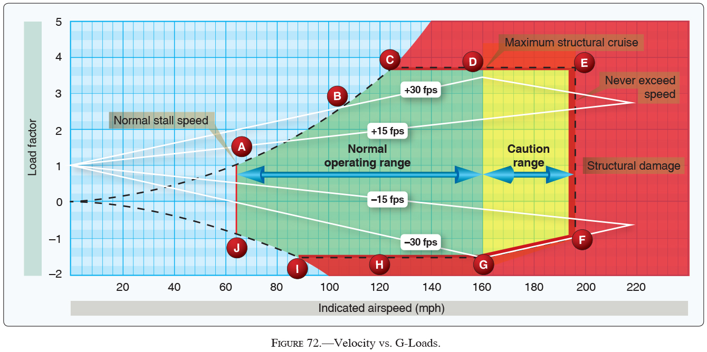
821. (Refer to Figure 72.) The horizontal dashed line from point C to point E represents the
Figure 72
822. (Refer to Figure 72.) The positive limit load factor is represented by the
823. When speaking to a flight service weather briefer, you should state
824. The correct method of stating 5,500 feet MSL to ATC is
825. A lack of orientation with regard to the position, attitude, or movement of the aircraft in space is defined as
826. Unless otherwise authorized, which situation requires Automatic Dependent Surveillance-Broadcast (ADS-B)?
827. While on approach for landing on runway 9 at an uncontrolled airport, you notice ripples on the southeast corner of a small lake located 3/4 miles east of the airport. What is the correct course of action?
828. (Refer to Figure 8.) What is the effect of a temperature increase from 35 to 50 F on the density altitude if the pressure altitude remains at 3,000 feet MSL?
829. The Low-Level Significant Weather Prognostic Chart depicts weather conditions
830. Graphical Forecasts for Aviation (GFA) are weather charts best used to
831. (Refer to Figure 260, area A.) What is the predominant visibility around the letter A on the Washington and Oregon coast?
Figure 260 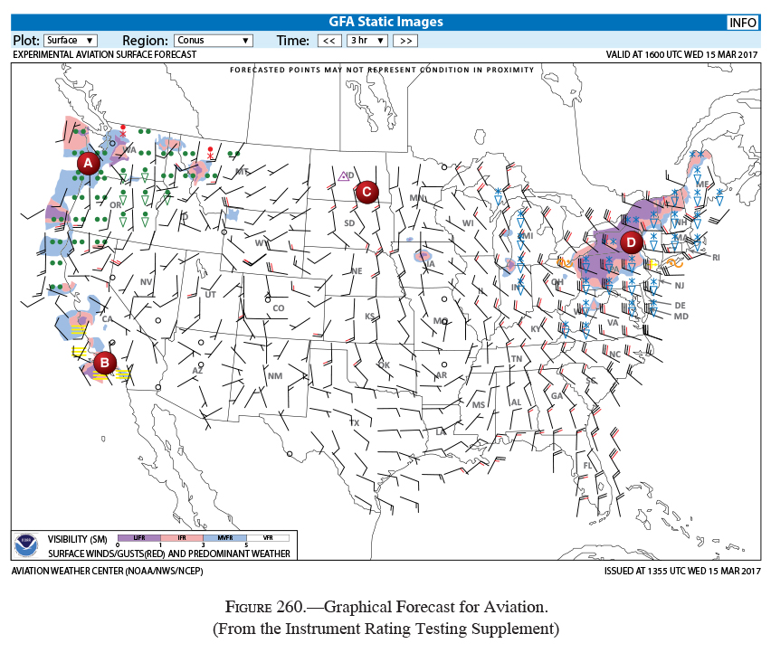
832. (Refer to Figure 262, area C.) The wind at Circle C is forecast to blow from which direction and at what velocity?
Figure 262
833. (Refer to Figure 260, area D.) The visibility in central New York just west of Circle D is mostly
Figure 260
834. (Refer to Figure 260, area D.) Immediately to the left of the letter D in western New York, what are the surface winds?
835. (Refer to Figure 269, area A.) Just southwest of Circle A what cloud layer is forecast to be over Lake Michigan?
Figure 269 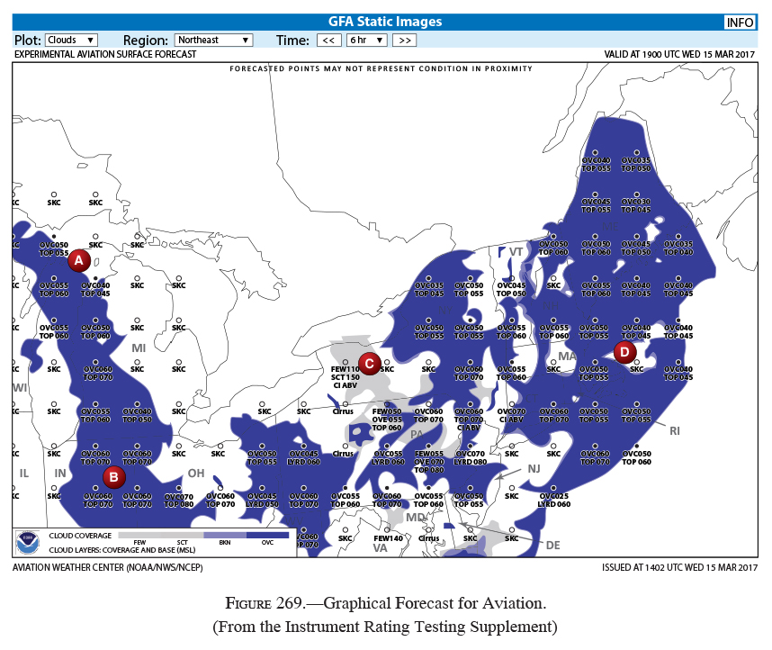
836. (Refer to Figure 269, area A.) What is the forecast ceiling at Delta County Airport (Field Elevation 609 feet MSL) in the Upper Peninsula of Michigan southwest of letter A?
Figure 269
837. (Refer to Figure 269, area B.) You're starting your trip in northeast Indiana. What kind of cloud coverage can you expect in this area?
838. (Refer to Figure 269, area C.) What cloud layers are forecast in central New York?
839. Given the following; Airport Elevation: 500 feet MSL Temperature: 23 C Dewpoint: 15 C Lapse Rate: 2 C per 1,000 feetFind the approximate base of the cumulus clouds.